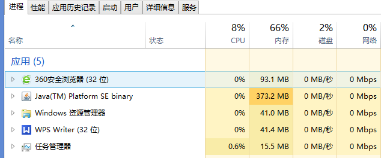
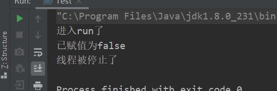

多线程基础知识
进程和线程
谈到多线程，就得先讲进程和线程的概念。
进程
进程可以理解为受操作系统管理的基本运行单元。360浏览器是一个进程、WPS也是一个进程，正在操作系统中运行的”.exe”都可以理解为一个进程

线程
进程中独立运行的子任务就是一个线程。像QQ.exe运行的时候就有很多子任务在运行，比如聊天线程、好友视频线程、下载文件线程等等。
为什么要使用多线程
如果使用得当，线程可以有效地降低程序的开发和维护等成本，同时提升复杂应用程序的性能。具体说，线程的优势有：
1、发挥多处理器的强大能力
现在，多处理器系统正日益盛行，并且价格不断降低，即时在低端服务器和中断桌面系统中，通常也会采用多个处理器，这种趋势还在进一步加快，因为通过提高时钟频率来提升性能已变得越来越困难，处理器生产厂商都开始转而在单个芯片上放置多个处理器核。试想，如果只有单个线程，双核处理器系统上程序只能使用一半的CPU资源，拥有100个处理器的系统上将有99%的资源无法使用。多线程程序则可以同时在多个处理器上执行，如果设计正确，多线程程序可以通过提高处理器资源的利用率来提升系统吞吐率。
2、在单处理器系统上获得更高的吞吐率
如果程序是单线程的，那么当程序等待某个同步I/O操作完成时，处理器将处于空闲状态。而在多线程程序中，如果一个线程在等待I/O操作完成，另一个线程可以继续运行，使得程序能在I/O阻塞期间继续运行。
3、建模的简单性
通过使用线程，可以将复杂并且异步的工作流进一步分解为一组简单并且同步的工作流，每个工作流在一个单独的线程中运行，并在特定的同步位置进行交互。我们可以通过一些现有框架来实现上述目标，例如Servlet和RMI，框架负责解决一些细节问题，例如请求管理、线程创建、负载平衡，并在正确的时候将请求分发给正确的应用程序组件。编写Servlet的开发人员不需要了解多少请求在同一时刻要被处理，也不需要了解套接字的输入流或输出流是否被阻塞，当调用Servlet的service方法来响应Web请求时，可以以同步的方式来处理这个请求，就好像它是一个单线程程序。
4、异步事件的简化处理
服务器应用程序在接受多个来自远程客户端的套接字连接请求时，如果为每个连接都分配其各自的线程并且使用同步I/O，那么就会降低这类程序的开发难度。如果某个应用程序对套接字执行读操作而此时还没有数据到来，那么这个读操作将一直阻塞，直到有数据到达。在单线程应用程序中，这不仅意味着在处理请求的过程中将停顿，而且还意味着在这个线程被阻塞期间，对所有请求的处理都将停顿。为了避免这个问题，单线程服务器应用程序必须使用非阻塞I/O，但是这种I/O的复杂性要远远高于同步I/O，并且很容易出错。然而，如果每个请求都拥有自己的处理线程，那么在处理某个请求时发生的阻塞将不会影响其他请求的处理。
并发和并行
你吃饭吃到一半，电话来了，你一直到吃完了以后才去接，这就说明你不支持并发也不支持并行。
你吃饭吃到一半，电话来了，你停了下来接了电话，接完后继续吃饭，这说明你支持并发。
你吃饭吃到一半，电话来了，你一边打电话一边吃饭，这说明你支持并行。
并发的关键是你有处理多个任务的能力，不一定要同时。
并行的关键是你有同时处理多个任务的能力。
所以我认为它们最关键的点就是：是否是『同时』。
线程生命周期
在开始所有的线程方法介绍前，先来看下线程的几种状态.这样在讲下面的线程方法时，可以直到线程当前是进入到哪种状态了。
Java中的线程的生命周期大体可分为5种状态。
新建(NEW)：新创建了一个线程对象。
可运行(RUNNABLE)：线程对象创建后，其他线程(比如main线程）调用了该对象的start()方法。该状态的线程位于可运行线程池中，等待被线程调度选中，获取cpu 的使用权 。
运行(RUNNING)：可运行状态(runnable)的线程获得了cpu 时间片（timeslice） ，执行程序代码。
- 阻塞(BLOCKED)：阻塞状态是指线程因为某种原因放弃了cpu 使用权，也即让出了cpu timeslice，暂时停止运行。直到线程进入可运行(runnable)状态，才有机会再次获得cpu timeslice 转到运行(running)状态。阻塞的情况分三种：
(一). 等待阻塞：运行(running)的线程执行wait()方法，JVM会把该线程放入等待队列(waitting queue)中。
(二). 同步阻塞：运行(running)的线程在获取对象的同步锁时，若该同步锁被别的线程占用，则JVM会把该线程放入锁池(lock pool)中。
(三). 其他阻塞：运行(running)的线程执行Thread.sleep(long ms)或t.join()方法，或者发出了I/O请求时，JVM会把该线程置为阻塞状态。当sleep()状态超时、join()等待线程终止或者超时、或者I/O处理完毕时，线程重新转入可运行(runnable)状态。
- 死亡(DEAD)：线程run()、main() 方法执行结束，或者因异常退出了run()方法，则该线程结束生命周期。死亡的线程不可再次复生。
Thread中的实例方法
从Thread类中的实例方法和类方法的角度讲解Thread中的方法，这种区分的角度也有助于理解多线程中的方法。实例方法，只和实例线程（也就是new出来的线程）本身挂钩，和当前运行的是哪个线程无关。看下Thread类中的实例方法：
start()
start()方法的作用讲得直白点就是通知”线程规划器”，此线程可以运行了，正在等待CPU调用线程对象得run()方法，产生一个异步执行的效果。
调用start()方法的顺序不代表线程启动的顺序，线程启动顺序具有不确定性。
run()
线程开始执行，虚拟机调用的是线程run()方法中的内容。
如果只有run()没有start()，Thread实例run()方法里面的内容是没有任何异步效果的，全部被main函数执行。换句话说，只有run()而不调用start()启动线程是没有任何意义的
isAlive()
测试线程是否处于活动状态，只要线程启动且没有终止，方法返回的就是true。
getId()
在一个Java应用中，有一个long型的全局唯一的线程ID生成器threadSeqNumber，每new出来一个线程都会把这个自增一次，并赋予线程的tid属性
getName()
我们new一个线程的时候，可以指定该线程的名字，也可以不指定。如果指定，那么线程的名字就是我们自己指定的，getName()返回的也是开发者指定的线程的名字；如果不指定，那么Thread中有一个int型全局唯一的线程初始号生成器threadInitNum，Java先把threadInitNum自增，然后以”Thread-threadInitNum”的方式来命名新生成的线程
getPriority()和setPriority(int newPriority)
这两个方法用于获取和设置线程的优先级，优先级高的CPU得到的CPU资源比较多，设置优先级有助于帮”线程规划器”确定下一次选择哪一个线程优先执行。换句话说，两个在等待CPU的线程，优先级高的线程越容易被CPU选择执行。
线程默认优先级为5，如果不手动指定，那么线程优先级具有继承性，比如线程A启动线程B，那么线程B的优先级和线程A的优先级相同
MyThread1.java
public class MyThread1 extends Thread{
public void run() {
long beginTime = System.currentTimeMillis();
for (int j = 0; j < 100000; j++){}
long endTime = System.currentTimeMillis();
System.out.println("我是高优先级的 use time = " + (endTime - beginTime));
}
}
MyThread2.java
public class MyThread2 extends Thread{
public void run() {
long beginTime = System.currentTimeMillis();
for (int j = 0; j < 100000; j++){}
long endTime = System.currentTimeMillis();
System.out.println("我是低优先级的 use time = " + (endTime - beginTime));
}
}
main
public static void main(String[] args) {
for (int i = 0; i < 5; i++) {
MyThread1 t1 = new MyThread1();
t1.setPriority(6);
t1.start();
MyThread2 t2 = new MyThread2();
t2.setPriority(4);
t2.start();
}
}

从这个例子我们得出结论：CPU会尽量将执行资源让给优先级比较高的线程。
isDaemon、setDaemon
讲解两个方法前，首先要知道理解一个概念。Java中有两种线程，一种是用户线程，一种是守护线程。守护线程是一种特殊的线程，它的作用是为其他线程的运行提供便利的服务，最典型的应用便是GC线程。如果进程中不存在非守护线程了，那么守护线程自动销毁，因为没有存在的必要，为别人服务，结果服务的对象都没了，当然就销毁了。理解了这个概念后，看一下例子：
过setDaemon(true)来设置线程为“守护线程”；将一个用户线程设置为守护线程的方式是在线程启动用线程对象的setDaemon方法。
MyThread.java
public class MyThread extends Thread{
private int i = 0;
public void run() {
try {
while (true) {
i++;
System.out.println("i = " + i);
Thread.sleep(1000);
}
} catch (InterruptedException e) {
e.printStackTrace();
}
}
}
main
public static void main(String[] args) {
try {
MyThread mt = new MyThread();
mt.setDaemon(true);
mt.start();
Thread.sleep(5000);
System.out.println("我离开非守护线程就停止执行了，再也不打印了！");
} catch (InterruptedException e) {
e.printStackTrace();
}
}
将MyThread线程设置为守护线程，main函数都运行完了，自然也没有存在的必要了，就自动销毁了，因此也就没有再往下打印数字。
关于守护线程，有一个细节注意下，setDaemon(true)必须在线程start()之前
interrupt
Thread类的interrupt()方法无法中断线程。
public static void main(String[] args) {
MyThread t = new MyThread();
t.start();
t.interrupt();
}
static class MyThread extends Thread{
@Override
public void run() {
for (int i = 0; i < 500000; i++) {
System.out.println("i = " + (i + 1));
}
}
}
看结果还是打印到了50000。也就是说，尽管调用了interrupt()方法，但是线程并没有停止。
interrupt()方法的其中一个实际作用是：在线程受到阻塞时抛出一个中断信号，这样线程就得以退出阻塞状态。换句话说，没有被阻塞的线程，调用interrupt()方法是不起作用的。关于这个会在之后讲中断机制的时候详细介绍
interrupt()不能中断在运行中的线程，它只能改变中断状态(标记)而已。
interrupt()打断wait()
之前有说过，interrupt()方法的作用不是中断线程，而是在线程阻塞的时候给线程一个中断标识，表示该线程中断。wait()就是”阻塞的一种场景”，看一下用interrupt()打断wait()的例子：
ThreadDomain.java
public class ThreadDomain {
public void testMethod(Object lock) {
try {
synchronized (lock) {
System.out.println("开始wait");
lock.wait();
System.out.println("结束wait()");
}
} catch (InterruptedException e) {
System.out.println("wait被interrupt()打断了！");
e.printStackTrace();
}
}
}
MyThread.java
public class MyThread extends Thread{
private Object lock;
public MyThread(Object lock) {
this.lock = lock;
}
public void run() {
ThreadDomain td = new ThreadDomain();
td.testMethod(lock);
}
}
main
public static void main(String[] args) throws InterruptedException {
Object lock = new Object();
MyThread mt = new MyThread(lock);
mt.start();
Thread.sleep(5000);
mt.interrupt();
}

isInterrupted()
查看线程是否已经中断，但不清除状态标识
join()
join()方法的作用是等待线程销毁。join()方法反应的是一个很现实的问题，比如main线程的执行时间是1s，子线程的执行时间是10s，但是主线程依赖子线程执行完的结果，这时怎么办？可以像生产者/消费者模型一样，搞一个缓冲区，子线程执行完把数据放在缓冲区中，通知main线程，main线程去拿，这样就不会浪费main线程的时间了。另外一种方法，就是join()了。当然也可以用 CountDownLatch 或 CyclicBarrier。后面会介绍。 but先看一下例子：
MyThread
public class MyThread extends Thread{
public void run() {
try {
int secondValue = (int)(Math.random() * 10000);
System.out.println(secondValue);
Thread.sleep(secondValue);
} catch (InterruptedException e) {
e.printStackTrace();
}
}
}
main
public static void main(String[] args) throws InterruptedException {
MyThread mt = new MyThread();
mt.start();
mt.join();
System.out.println("我想等别人执行完毕之后我再执行，我做到了");
}
join()方法会使调用join()方法的线程所在的线程（也就是main线程）无限阻塞，直到调用join()方法的线程销毁为止，此例中main线程就会无限期阻塞直到mt的run()方法执行完毕。
join()方法的一个重点是要区分出和sleep()方法的区别。join(2000)也是可以的，表示调用join()方法所在的线程最多等待2000ms，两者的区别在于：
sleep(2000)不释放锁，join(2000)释放锁，因为join()方法内部使用的是wait()，因此会释放锁。
Thread类中的静态方法
Thread类中的静态方法表示操作的线程是”正在执行静态方法所在的代码块的线程“。为什么Thread类中要有静态方法，这样就能对CPU当前正在运行的线程进行操作。下面来看一下Thread类中的静态方法：
currentThread()
currentThread()方法返回的是对当前正在执行线程对象的引用。看一个重要的例子，然后得出结论：
public class MyThread extends Thread{
static{
System.out.println("静态块的打印：" + Thread.currentThread().getName());
}
public MyThread23(){
System.out.println("构造方法的打印：" + Thread.currentThread().getName());
}
public void run() {
System.out.println("run()方法的打印：" + Thread.currentThread().getName());
}
}
public static void main(String[] args){
MyThread04 mt = new MyThread04();
mt.start();
}
看一下运行结果：
静态块的打印：main
构造方法的打印：main
run()方法的打印：Thread-0
这个例子说明了，线程类的构造方法、静态块是被main线程调用的，而线程类的run()方法才是应用线程自己调用的。在这个例子的基础上，再深入：
public class MyThread extends Thread{
public MyThread() {
System.out.println("开始执行构造函数");
System.out.println("Thread.currentThread().getName():" + Thread.currentThread().getName());
System.out.println("this.getName():" + this.getName());
System.out.println("构造函数执行完毕");
}
public void run() {
System.out.println("run Begin");
System.out.println("Thread.currentThread().getName():"+ Thread.currentThread().getName());
System.out.println("this.getName():" + this.getName());
System.out.println("run end");
}
}
main
public static void main(String[] args) {
MyThread t = new MyThread();
t.start();
}

要理解一个重要的概念，就是”this.XXX()”和”Thread.currentThread().XXX()”的区别，这个就是最好的例子。必须要清楚的一点就是：当前执行的Thread未必就是Thread本身。从这个例子就能看出来：
（1）执行MyThread构造方法是main，当前线程却是Thread-0
（2）执行run()方法的Thread-0，当前线程也是Thread-0，说明run()方法就是被线程实例去执行的
所以，再强调一下，在MyThread里调用Thread.currentThread()返回回来的线程对象的引用未必就是MyThread
sleep(long millis)
sleep(long millis)方法的作用是在指定的毫秒内让当前”正在执行的线程“休眠（暂停执行）。这个”正在执行的线程”是关键，指的是Thread.currentThread()返回的线程。根据JDK API的说法，”该线程不丢失任何监视器的所属权”，简单说就是sleep代码上下文如果被加锁了，锁依然在，但是CPU资源会让出给其他线程。看一下例子：
yield()
暂停当前执行的线程对象，并执行其他线程。这个暂停是会放弃CPU资源的，并且放弃CPU的时间不确定，有可能刚放弃，就获得CPU资源了，也有可能放弃好一会儿，才会被CPU执行。
如果你觉得一个线程不是那么重要，或者优先级非常低，而且又害怕它会占用太多的CPU资源，那么可以在适当的时候调用Thread.yield()，给予其他重要线程更多的工作机会。
暂停当前正在执行的线程对象,并执行其他线程。 yield()应该做的是让当前运行线程回到可运行状态,以允许具有相同优先级的其它线程竞争机会
interrupted()
注意和上面的interrupt()/isInterrupted()方法的区别
测试当前线程是否已经中断，执行后具有将状态标识清除为false的功能。换句话说，如果执行了一次interrupt()，然后调用interrupted(),返回true，然后执行一次interrupted(),那么返回的必定是false： 用来恢复中断状态
public class InterruptedDemo1 implements Runnable{
public static void main(String[] args) throws InterruptedException {
Thread testThread = new Thread(new InterruptedDemo1(),"InterruptionInJava");
testThread.start();
testThread.interrupt();
System.out.println("主线程结束");
}
@Override
public void run() {
while(true){
if(Thread.currentThread().isInterrupted()){
System.out.println("我被打断了，但我仍然在运行");
System.out.println("当前是否中断:"+Thread.interrupted());
System.out.println("当前是否中断:"+Thread.interrupted());
}else{
System.out.println("还没被打断");
return;
}
}
}
}
interrupted /interrupt/ isInterrupted
中断在java中主要有3个方法，interrupt(),isInterrupted()和interrupted()。
- interrupt()，在一个线程中调用另一个线程的interrupt()方法，即会向那个线程发出信号——线程中断状态已被设置。至于那个线程何去何从，由具体的代码实现决定。
- isInterrupted()，用来判断当前线程的中断状态(true or false)。
- interrupted()是个Thread的static方法，用来恢复中断状态
Java没有提供一种安全、直接的方法来停止某个线程，而是提供了中断机制。中断机制是一种协作机制，也就是说通过中断并不能直接终止另一个线程，而需要被中断的线程自己处理。
中断机制也是一样的，每个线程对象里都有一个标识位表示是否有中断请求
interrupt()不能中断在运行中的线程，它只能改变中断状态(标记)而已。
public class InterruptionDemo1 implements Runnable{
public static void main(String[] args) throws InterruptedException {
Thread testThread = new Thread(new InterruptionDemo1(),"InterruptionInJava");
testThread.start();
Thread.sleep(1000);
testThread.interrupt();
System.out.println("主线程结束");
}
@Override
public void run() {
while(true){
if(Thread.currentThread().isInterrupted()){
System.out.println("我被打断了，但我仍然在运行");
}else{
System.out.println("还没被打断");
}
}
}
}
结果显示，被中断后，仍旧运行，不停打印 “我被打断了，但我仍然在运行”
那么，如何正确中断？
既然是只能修改中断状态，那么我们应该针对中断状态做些什么。
public class InterruptionDemo2 implements Runnable{
private volatile static boolean flag = false;
public static void main(String[] args) throws InterruptedException {
Thread testThread = new Thread(new InterruptionDemo2(),"InterruptionInJava");
testThread.start();
Thread.sleep(1000);
InterruptionDemo2.flag = true;
System.out.println("主线程结束");
}
@Override
public void run() {
while(!flag){
System.out.println("---");
}
}
}
这表明是成功中断了的
这种开关的方式看起来不错，但是当遇到线程阻塞时，就会很无奈了，正如下面代码所示：
public class InterruptionDemo3 implements Runnable {
private volatile static boolean flag = false;
public static void main(String[] args) throws InterruptedException {
Thread testThread = new Thread(new InterruptionDemo3(),"InterruptionInJava");
testThread.start();
Thread.sleep(1000);
InterruptionDemo3.flag = true;
System.out.println("main end");
}
@Override
public void run() {
while(!flag){
try {
Thread.sleep(10000000);
} catch (InterruptedException e) {
System.out.println("caught exception: "+e);
}
}
}
}
线程被阻塞无法被中断。这时候救世主interrupt函数又回来了，它可以迅速中断被阻塞的线程，抛出一个InterruptedException，把线程从阻塞状态中解救出来
将标记和interrupt结合
public class InterruptDemo4 implements Runnable {
private volatile static boolean flag = false;
public static void main(String[] args) throws InterruptedException {
Thread testThread = new Thread(new InterruptDemo4(),"InterruptionInJava");
testThread.start();
Thread.sleep(1000);
InterruptDemo4.flag = true;
testThread.interrupt();
System.out.println("打断");
System.out.println("主线程结束");
}
@Override
public void run() {
while(!flag){
try {
System.out.println("没中断,睡上10000秒");
Thread.sleep(10000000);
} catch (InterruptedException e) {
System.out.println("捕捉到异常: "+e);
}
}
}
}
这样既能保证标记为未中断的时候执行子线程，又能在子线程阻塞的时候也打断它
wait/notify/notifyall
线程本身是操作系统中独立的个体，但是线程与线程之间不是独立的个体，因为它们彼此之间要相互通信和协作。
想像一个场景，A线程做int型变量i的累加操作，B线程等待i到了10000就打印出i，怎么处理？一个办法就是，B线程while(i == 10000)，这样两个线程之间就有了通信，B线程不断通过轮训来检测i == 10000这个条件。
这样可以实现我们的需求，但是也带来了问题：CPU把资源浪费了B线程的轮询操作上，因为while操作并不释放CPU资源，导致了CPU会一直在这个线程中做判断操作。如果可以把这些轮询的时间释放出来，给别的线程用，就好了。
在Object对象中有三个方法wait()、notify()、notifyAll()，既然是Object中的方法，那每个对象自然都是有的。如果不接触多线程的话，这两个方法是不太常见的。下面看一下前两个方法：
wait()
wait()的作用是使当前执行代码的线程进行等待（线程进入等待阻塞），将当前线程置入”预执行队列”中，并且wait()所在的代码处停止执行，直到接到通知或被中断。
在调用wait()之前，线程必须获得该对象的锁，因此只能在同步方法/同步代码块中调用wait()方法。
在调用wait()之前，线程必须获得该对象的锁，因此只能在同步方法/同步代码块中调用wait()方法。
在调用wait()之前，线程必须获得该对象的锁，因此只能在同步方法/同步代码块中调用wait()方法。
notify()
notify()的作用是，如果有多个线程等待，那么线程规划器随机挑选出一个wait的线程，对其发出通知notify()，并使它等待获取该对象的对象锁注意”等待获取该对象的对象锁”，这意味着，即使收到了通知，wait的线程也不会马上获取对象锁，必须等待notify()方法的线程释放锁才可以。
和wait()一样，notify()也要在同步方法/同步代码块中调用。
和wait()一样，notify()也要在同步方法/同步代码块中调用。
和wait()一样，notify()也要在同步方法/同步代码块中调用。
总结起来就是，wait()使线程停止运行，notify()使停止运行的线程继续运行。
PS:如果想要不随机唤醒线程，可使用Lock，以后会介绍
示例:
public class MyThread1 extends Thread{
private Object lock;
public MyThread1(Object lock) {
this.lock = lock;
}
@Override
public void run() {
try {
synchronized (lock) {
System.out.println("thread1开始wait time:" + System.currentTimeMillis());
lock.wait();
System.out.println("thread1结束 time:" + System.currentTimeMillis());
}
} catch (InterruptedException e) {
e.printStackTrace();
}
}
}
public class MyThread2 extends Thread{
private Object lock;
public MyThread2(Object lock) {
this.lock = lock;
}
public void run() {
synchronized (lock) {
System.out.println("thread2开始 notify time:" + System.currentTimeMillis());
lock.notify();
System.out.println("thread2结束notify time:" + System.currentTimeMillis());
}
}
}
写个main函数，Thread.sleep(3000)也是为了保证t1先运行，这样才能看到wait()和notify()的效果：
public static void main(String[] args) throws InterruptedException {
Object lock = new Object();
MyThread1 t1 = new MyThread1(lock);
t1.start();
System.out.println("睡眠3秒后thread2进行notify");
Thread.sleep(3000);
MyThread2 t2 = new MyThread2(lock);
t2.start();
}
睡眠3秒后thread2进行notify
thread1开始wait time:1605852468080
thread2开始 notify time:1605852471083
thread2结束notify time:1605852471083
thread1结束 time:1605852471083
wait()之后代码一直暂停，notify()之后代码才开始运行。
wait()方法可以使调用该线程的方法释放共享资源的锁，然后从运行状态退出，进入等待队列，直到再次被唤醒。
notify()方法可以随机唤醒等待队列中等待同一共享资源的一个线程，并使得该线程退出等待状态，进入可运行状态 （进入可运行状态，并不意味着马上运行。需要等当前线程运行完之后）
notifyAll()方法可以使所有正在等待队列中等待同一共享资源的全部线程从等待状态退出，进入可运行状态
最后，如果wait()方法和notify()/notifyAll()方法不在同步方法/同步代码块中被调用，那么虚拟机会抛出java.lang.IllegalMonitorStateException，注意一下。
notifyall
MyThread1和MyThread2代码就不贴了，和上面的一样
NotifyThread.java
public class NotifyThread extends Thread{
private Object lock;
public NotifyThread(Object lock) {
this.lock = lock;
}
public void run() {
synchronized (lock) {
System.out.println("thread开始notify time:" + System.currentTimeMillis());
lock.notifyAll();
System.out.println("thread结束notify time:" + System.currentTimeMillis());
}
}
}
public static void main(String[] args) throws InterruptedException {
Object lock = new Object();
MyThread1 t1 = new MyThread1(lock);
MyThread2 t2 = new MyThread2(lock);
t1.start();
t2.start();
System.out.println("睡眠3秒");
Thread.sleep(3000);
NotifyThread nt = new NotifyThread(lock);
nt.start();
}

可以看到notifyall确实是唤醒所有wait中的线程, 利用Object对象的notifyAll()方法可以唤醒处于同一监视器下的所有处于wait的线程 。至于唤醒的顺序，就和线程启动的顺序一样，是虚拟机随机的。
wait()释放锁
多线程的学习中，任何地方都要关注”锁”，wait()和notify()也是这样。wait()方法是释放锁的, notify是不释放锁的。写一个例子来证明一下：
ThreadDomain.java
public class ThreadDomain {
public void testMethod(Object lock) {
try {
synchronized (lock) {
System.out.println(Thread.currentThread().getName() + "开始wait");
lock.wait();
System.out.println(Thread.currentThread().getName() + "结束wait");
}
} catch (InterruptedException e) {
e.printStackTrace();
}
}
}
MyThread.java
public class MyThread extends Thread{
private Object lock;
public MyThread(Object lock) {
this.lock = lock;
}
public void run() {
ThreadDomain td = new ThreadDomain();
td.testMethod(lock);
}
}
main函数调用下
public static void main(String[] args) {
Object lock = new Object();
MyThread t1 = new MyThread(lock);
MyThread t2 = new MyThread(lock);
t1.start();
t2.start();
}
如果wait()方法不释放锁，那么Thread-1根本不会进入同步代码块打印的，所以，证明完毕。
notify()不释放锁
public class ThreadDomain {
public void testMethod(Object lock) {
try {
synchronized (lock) {
System.out.println("开始wait, ThreadName = " + Thread.currentThread().getName());
lock.wait();
System.out.println("结束wait, ThreadName = " + Thread.currentThread().getName());
}
} catch (InterruptedException e) {
e.printStackTrace();
}
}
public void synNotifyMethod(Object lock) {
try {
synchronized (lock) {
System.out.println("开始notify,并睡五秒, ThreadName = " + Thread.currentThread().getName());
lock.notify();
Thread.sleep(5000);
System.out.println("结束notify, ThreadName = " + Thread.currentThread().getName());
}
} catch (InterruptedException e) {
e.printStackTrace();
}
}
}
MyThread1.java
public class MyThread1 extends Thread{
private Object lock;
public MyThread1(Object lock) {
this.lock = lock;
}
public void run() {
ThreadDomain td = new ThreadDomain();
td.testMethod(lock);
}
}
MyThread2.java
public class MyThread2 extends Thread{
private Object lock;
public MyThread2(Object lock) {
this.lock = lock;
}
public void run() {
ThreadDomain td = new ThreadDomain();
td.synNotifyMethod(lock);
}
}
main
public static void main(String[] args) {
Object lock = new Object();
MyThread1 t1 = new MyThread1(lock);//调的是wait
t1.start();
MyThread2 t2 = new MyThread2(lock);//调的是notify
t2.start();
MyThread2 t2_ = new MyThread2(lock);//调的是notify,用2个线程来notify来证明，第一个notify是否释放了锁,如果释放了，第二个notify可以立即执行.否则就证明了notify就不会释放锁的
t2_.start();
}
结果:
开始wait, ThreadName = Thread-0
开始notify,并睡五秒, ThreadName = Thread-1
......这里阻塞了5秒......
结束notify, ThreadName = Thread-1
结束wait, ThreadName = Thread-0
开始notify,并睡五秒, ThreadName = Thread-2
结束notify, ThreadName = Thread-2
如果notify()方法释放锁，那么在Thread-1调用notify()方法后Thread.sleep(5000)必定应该有其他线程可以进入同步代码块了，但是实际上没有，必须等到Thread-1把代码执行完。所以，证明完毕。
wait/sleep的区别
Thread有一个sleep()静态方法，它也能使线程暂停一段时间。sleep与wait的不同点是：sleep并不释放锁，并且sleep的暂停和wait暂停是不一样的。obj.wait会使线程进入obj对象的等待集合中并等待唤醒。
但是wait()和sleep()都可以通过interrupt()方法打断线程的暂停状态，从而使线程立刻抛出InterruptedException。
如果线程A希望立即结束线程B，则可以对线程B对应的Thread实例调用interrupt方法。如果此刻线程B正在wait/sleep/join，则线程B会立刻抛出InterruptedException，在catch() {} 中直接return即可安全地结束线程。
需要注意的是，InterruptedException是线程自己从内部抛出的，并不是interrupt()方法抛出的。对某一线程调用interrupt()时，如果该线程正在执行普通的代码，那么该线程根本就不会抛出InterruptedException。但是，一旦该线程进入到wait()/sleep
sleep是线程类（Thread）的方法，导致此线程暂停执行指定时间，给执行机会给其他线程，但是监控状态依然保持，到时后会自动恢复 。调用sleep不会释放对象锁。
wait是Object类的方法，对此对象调用wait方法导致本线程放弃对象锁，进入等待此对象的等待锁定池，只有针对此对象发出notify方 法（或notifyAll）后本线程才进入对象锁定池准备获得对象锁进入运行状态。
synchronized
在多线程中，难免会出现在多个线程中对同一个对象的实例变量进行并发访问的情况，如果不做正确的同步处理，那么产生的后果就是”脏读”，也就是取到的数据其实是被更改过的。也就是线程不安全
关键字synchronized取得的锁都是对象锁，而不是把一段代码或方法（函数）当作锁，哪个线程先执行带synchronized关键字的方法，哪个线程就持有该方法所属对象的锁(即this)，其他线程都只能呈等待状态。但是这有个前提：既然锁叫做对象锁，那么势必和对象相关，所以多个线程访问的必须是同一个对象。
如果多个线程访问的是多个对象，那么Java虚拟机就会创建多个锁，既然两个线程持有的是不同的锁，自然不会受到”等待释放锁”这一行为的制约，可以分别运行代码。
1、A线程持有Object对象的Lock锁，B线程可以以异步方式调用Object对象中的非synchronized类型的 方法
2、A线程持有Object对象的Lock锁，B线程如果在这时调用Object对象中的synchronized类型的 方法 则需要等待，也就是同步
synchronized锁重入
关键字synchronized拥有锁重入的功能。所谓锁重入的意思就是：当一个线程得到一个对象锁后，再次请求此对象锁时时可以再次得到该对象的锁的。
这种锁重入的机制，也支持在父子类继承的环境中。这个“锁”的归属者不是“类”而是“实例”。不管这个方法是定义在父类还是子类中，执行时的锁都是那一个“实例”的，一个对象而已
public class Widget {
public synchronized void doSomething() {
// do somethig here...
}
}
public class LoggingWidget extends Widget {
public synchronized void doSomething() {
System.out.println(toString() + ": calling doSomething");
super.doSomething();
}
}
当线程执行LoggingWidget实例中的doSomething时获得LoggingWidget实例的锁。
LoggingWidget实例doSomething方法中调用 super.doSomething()，调用者依然是LoggingWidget实例，再次获得的锁依然是LoggingWidget实例的锁。
线程再次获得LoggingWidget实例的锁，即锁的重入。
异常自动释放锁
最后一个知识点是异常。当一个线程执行的代码出现异常时，其所持有的锁会自动释放
synchronized同步代码块
用关键字synchronized声明方法在某些情况下是有弊端的，比如A线程调用同步方法执行一个较长时间的任务，那么B线程必须等待比较长的时间。这种情况下可以尝试使用synchronized同步语句块来解决问题
当A线程访问对象的synchronized代码块的时候，B线程依然可以访问对象方法中其余非synchronized块的部分，第一部分的执行结果证明了这一点
当A线程进入对象的synchronized代码块的时候，B线程如果要访问这段synchronized块，那么访问将会被阻塞，第二部分的执行结果证明了这一点
所以，从执行效率的角度考虑，有时候我们未必要把整个方法都加上synchronized，而是可以采取synchronized块的方式，对会引起线程安全问题的那一部分代码进行synchronized就可以了。
两个synchronized块之间具有互斥性
如果线程1访问了一个对象A方法的synchronized块，那么线程2对同一对象B方法的synchronized块的访问将被阻塞
总结一下前面的内容：
1、synchronized同步方法
（1）对其他synchronized同步方法或synchronized(this)同步代码块呈阻塞状态
（2）同一时间只有一个线程可以执行synchronized同步方法中的代码
2、synchronized同步代码块
（1）对其他synchronized同步方法或synchronized(this)同步代码块呈阻塞状态
（2）同一时间只有一个线程可以执行synchronized(this)同步代码块中的代码
前面都使用synchronized(this)的格式来同步代码块，其实Java还支持对”任意对象”作为对象监视器来实现同步的功能。这个”任意对象”大多数是实例变量及方法的参数，使用格式为synchronized(非this对象)。
锁非this对象具有一定的优点：如果在一个类中有很多synchronized方法，这时虽然能实现同步，但会受到阻塞，从而影响效率。但如果同步代码块锁的是非this对象，则synchronized(非this对象x)代码块中的程序与同步方法是异步的，不与其他锁this同步方法争抢this锁，大大提高了运行效率。
最后提一点，synchronized(非this对象x)，这个对象如果是实例变量的话，指的是对象的引用，只要对象的引用不变，即使改变了对象的属性，运行结果依然是同步的。
细化synchronized(非this对象x)的三个结论
synchronized(非this对象x)格式的写法是将x对象本身作为对象监视器，有三个结论得出：
1、当多个线程同时执行synchronized(x){}同步代码块时呈同步效果
2、当其他线程执行x对象中的synchronized同步方法时呈同步效果
3、当其他线程执行x对象方法中的synchronized(this)代码块时也呈同步效果
同步静态方法
synchronized还可以应用在静态方法上，如果这么写，则代表的是对当前.java文件对应的Class类加锁
静态同步方法和非静态同步方法持有的是不同的锁，前者是类锁，后者是对象锁。
所谓类锁，举个再具体的例子。假如一个类中有一个静态同步方法A，new出了两个类的实例B和实例C，线程D持有实例B，线程E持有实例C，只要线程D调用了A方法，那么线程E调用A方法必须等待线程D执行完A方法，尽管两个线程持有的是不同的对象。
volatile
直接先举一个例子：
public class MyThread extends Thread{
private boolean isRunning = true;
public boolean isRunning() {
return isRunning;
}
public void setRunning(boolean isRunning) {
this.isRunning = isRunning;
}
public void run() {
System.out.println("进入run了");
while (isRunning == true){}
System.out.println("线程被停止了");
}
}
public static void main(String[] args) {
try {
MyThread mt = new MyThread();
mt.start();
Thread.sleep(1000);
mt.setRunning(false);
System.out.println("已赋值为false");
} catch (InterruptedException e) {
e.printStackTrace();
}
}
看一下运行结果：
也许这个结果有点奇怪，明明isRunning已经设置为false了， 线程还没停止呢？
这就要从Java内存模型（JMM）说起，这里先简单讲，虚拟机那块会详细讲的。根据JMM，Java中有一块主内存，不同的线程有自己的工作内存，同一个变量值在主内存中有一份，如果线程用到了这个变量的话，自己的工作内存中有一份一模一样的拷贝。每次进入线程从主内存中拿到变量值，每次执行完线程将变量从工作内存同步回主内存中。
出现打印结果现象的原因就是主内存和工作内存中数据的不同步造成的。因为执行run()方法的时候拿到一个主内存isRunning的拷贝，而设置isRunning是在main函数中做的，换句话说 ，设置的isRunning设置的是主内存中的isRunning，更新了主内存的isRunning，线程工作内存中的isRunning没有更新，当然一直死循环了，因为对于线程来说，它的isRunning依然是true。
解决这个问题很简单，给isRunning关键字加上volatile。加上了volatile的意思是，每次读取isRunning的值的时候，都先从主内存中把isRunning同步到线程的工作内存中，再当前时刻最新的isRunning。看一下给isRunning加了volatile关键字的运行效果：

看到这下线程停止了，因为从主内存中读取了最新的isRunning值，线程工作内存中的isRunning变成了false，自然while循环就结束了。
volatile的作用就是这样，被volatile修饰的变量，保证了每次读取到的都是最新的那个值。线程安全围绕的是可见性和原子性这两个特性展开的，volatile解决的是变量在多个线程之间的可见性，但是无法保证原子性。
多提一句，synchronized除了保障了原子性外，其实也保障了可见性。因为synchronized无论是同步的方法还是同步的代码块，都会先把主内存的数据拷贝到工作内存中，同步代码块结束，会把工作内存中的数据更新到主内存中，这样主内存中的数据一定是最新的。
原子类也无法保证线程安全
原子操作表示一段操作是不可分割的，没有其他线程能够中断或检查正在原子操作中的变量。一个原子类就是一个原子操作可用的类，它可以在没有锁的情况下保证线程安全。
但是这种线程安全不是绝对的，在有逻辑的情况下输出结果也具有随机性，比如
public class ThreadDomain{
public static AtomicInteger aiRef = new AtomicInteger();
public void addNum() {
System.out.println(Thread.currentThread().getName() + "加了100之后的结果：" +
aiRef.addAndGet(100));
aiRef.getAndAdd(1);
}
}
public class MyThread extends Thread{
private ThreadDomain td;
public MyThread(ThreadDomain td) {
this.td = td;
}
public void run(){
td.addNum();
}
}
public static void main(String[] args){
try {
ThreadDomain29 td = new ThreadDomain29();
MyThread29[] mt = new MyThread29[5];
for (int i = 0; i < mt.length; i++){
mt[i] = new MyThread29(td);
}
for (int i = 0; i < mt.length; i++) {
mt[i].start();
}
Thread.sleep(1000);
System.out.println(ThreadDomain29.aiRef.get());
} catch (InterruptedException e) {
e.printStackTrace();
}
}
这里用了一个Integer的原子类AtomicInteger，看一下运行结果：
Thread-1加了100之后的结果：200
Thread-4加了100之后的结果：500
Thread-3加了100之后的结果：400
Thread-2加了100之后的结果：300
Thread-0加了100之后的结果：100
505
显然，结果是正确的，但不是我们想要的，因为我们肯定希望按顺序输出加了之后的结果，现在却是200、500、400、300、100这么输出。导致这个问题产生的原因是aiRef.addAndGet(100)和aiRef.addAndGet(1)这两个操作是可分割导致的。
解决方案，就是给addNum方法加上synchronized即可。
单个原子操作是线程安全的，但是多个原子操作组成的序列就有可能非线程安全，比如hashtable 的 put-if-absent是吗？可以这么理解吗
是的，单个原子操作是线程安全的，但多个原子操作的组合有可能是非线程安全的，像fail-fast机制也是因为这个原因引起的。
其实这个在Java里面有专门的名词的：相对线程安全。
Lock
之前已经说道，JVM提供了synchronized关键字来实现对变量的同步访问以及用wait和notify来实现线程间通信。在jdk1.5以后，JAVA提供了Lock类来实现和synchronized一样的功能，并且还提供了Condition来显示线程间通信。
Lock类是Java类来提供的功能，丰富的api使得Lock类的同步功能比synchronized的同步更强大
Lock类实际上是一个接口，我们在实例化的时候实际上是实例化实现了该接口的类Lock lock = new ReentrantLock();
ReentrantLock
ReentrantLock，一个可重入的互斥锁，它具有与使用synchronized方法和语句所访问的隐式监视器锁相同的一些基本行为和语义，但功能更强大。
lock是可中断锁，而synchronized 不是可中断锁
线程A和B都要获取对象O的锁定，假设A获取了对象O锁，B将等待A释放对O的锁定
如果使用 synchronized ，如果A不释放，B将一直等下去，不能被中断
如果 使用ReentrantLock，如果A不释放，可以使B在等待了足够长的时间以后，中断等待，而干别的事情(详见下面的tryLock(timeout,unit))
先来看一下ReentrantLock的基本用法：
public class MyConditionService {
private Lock lock = new ReentrantLock();
public void testMethod(){
lock.lock();
for (int i = 0 ;i < 5;i++){
System.out.println("ThreadName = " + Thread.currentThread().getName() + (" " + (i + 1)));
}
lock.unlock();
}
}
测试的代码如下：
MyConditionService service = new MyConditionService();
new Thread(service::testMethod).start();
new Thread(service::testMethod).start();
new Thread(service::testMethod).start();
new Thread(service::testMethod).start();
new Thread(service::testMethod).start();
Thread.sleep(1000 * 5);
就是每个线程的打印1-5都是同步进行，顺序没有乱。 这也证明了ReentrantLock具有加锁的功能
ReentrantLock持有的是对象监视器
ReentrantLock持有的是对象监视器
ReentrantLock持有的是对象监视器
针对同一个lock对象执行的lock.lock是获得对象监视器的线程才能执行同步代码 其他线程都要等待。
不过注意一点，ReentrantLock虽然持有对象监视器，但是和synchronized持有的对象监视器不是一个意思，虽然我也不清楚两个持有的对象监视器有什么区别。所以就记一个结论吧—-ReentrantLock和synchronized持有的对象监视器不同。
另外，千万别忘了，ReentrantLock持有的锁是需要手动去unlock()的 。 加锁，和释放锁都在try-finally。这样的好处是在任何异常发生的情况下，都能保障锁的释放。
Lock类其他的功能
如果Lock类只有lock和unlock方法也太简单了，Lock类提供了丰富的加锁的方法和对加锁的情况判断。主要有
- 实现锁的公平
- 获取当前线程调用lock的次数，也就是获取当前线程锁定的个数
- 获取等待锁的线程数
- 查询指定的线程是否等待获取此锁定
- 查询是否有线程等待获取此锁定
- 查询当前线程是否持有锁定
- 判断一个锁是不是被线程持有
- 加锁时如果中断则不加锁，进入异常处理
- 尝试加锁，如果该锁未被其他线程持有的情况下成功
实现公平锁
在实例化锁对象的时候，构造方法有2个，一个是无参构造方法，一个是传入一个boolean变量的构造方法。当传入值为true的时候，该锁为公平锁。默认不传参数是非公平锁。
公平锁：按照线程加锁的顺序来获取锁
非公平锁：随机竞争来得到锁
此外，JAVA还提供isFair()来判断一个锁是不是公平锁。
写代码验证下:
public class ThreadDomain {
private Lock lock = new ReentrantLock(true);
public void testMethod() {
try {
lock.lock();
System.out.println("ThreadName" + Thread.currentThread().getName() + "获得锁");
} finally {
lock.unlock();
}
}
}
public static void main(String[] args) {
final ThreadDomain td = new ThreadDomain();
Runnable runnable = new Runnable() {
public void run() {
System.out.println("线程" + Thread.currentThread().getName() + "运行了");
td.testMethod();
}
};
Thread[] threads = new Thread[5];
for (int i = 0; i < 5; i++) {
threads[i] = new Thread(runnable);
}
for (int i = 0; i < 5; i++) {
threads[i].start();
}
看一下运行结果：
可以看到结果里面获得锁的顺序和线程启动顺序是一致的，这就是公平锁。对比一下，如果是非公平锁运行结果是怎么样的，在new ReentrantLock的时候传入false：
线程启动顺序是14230，获得锁的顺序却是12430，这就是非公平锁，它不保证先排队尝试去获取锁的线程一定能先拿到锁
获取当前线程锁定的个数
Java提供了getHoldCount()方法来获取当前线程的锁定个数。所谓锁定个数就是当前线程调用lock方法的次数。一般一个方法只会调用一个lock方法，但是有可能在同步代码中还有调用了别的方法，那个方法内部有同步代码。这样，getHoldCount()返回值就是大于1。
public class ThreadDomain {
private ReentrantLock lock = new ReentrantLock();
public void testMethod1() {
try {
lock.lock();
System.out.println("testMethod1 getHoldCount = " + lock.getHoldCount());
testMethod2();
} finally {
lock.unlock();
}
}
public void testMethod2() {
try {
lock.lock();
System.out.println("testMethod2 getHoldCount = " + lock.getHoldCount());
} finally {
lock.unlock();
}
}
}
public static void main(String[] args) {
ThreadDomain td = new ThreadDomain();
td.testMethod1();
}
结果
testMethod1 getHoldCount = 1
testMethod2 getHoldCount = 2
ReentrantLock和synchronized一样，锁都是可重入的，同一线程的同一个ReentrantLock的lock()方法被调用了多少次，getHoldCount()方法就返回多少
下面的方法用来判断等待锁的情况
获取等待锁的线程数
Java提供了getQueueLength()方法来得到等待锁释放的线程的估计个数。 注意”估计”两个字，因为此方法遍历内部数据结构的同时，线程的数据可能动态变化
public class ThreadDomain {
public ReentrantLock lock = new ReentrantLock();
public void testMethod() {
try {
lock.lock();
System.out.println("ThreadName = " + Thread.currentThread().getName() + "进入方法！");
System.out.println("是否公平锁？" + lock.isFair());
System.out.println("有"+lock.getQueueLength()+"个线程正在等待");
Thread.sleep(2000);
} catch (InterruptedException e) {
e.printStackTrace();
} finally {
lock.unlock();
}
}
}
public static void main(String[] args) throws InterruptedException {
final ThreadDomain td = new ThreadDomain();
Runnable runnable = new Runnable() {
@Override
public void run() {
td.testMethod();
}
};
Thread[] threads = new Thread[10];
for (int i = 0; i < 10; i++){
threads[i] = new Thread(runnable);
}
for (int i = 0; i < 10; i++){
threads[i].start();
}
Thread.sleep(2000);
}
hasQueuedThread()和hasQueuedThreads()
hasQueuedThread(Thread thread)用来查询指定的线程是否正在等待获取指定的对象监视器
hasQueuedThreads()用于查询是否有线程正在等待获取指定的对象监视器
看一下例子，换一个写法，ReentrantLock既然是一个类，就有类的特性，所以这次用继承ReentrantLock的写法，这也是很常见的：
public class ThreadDomain extends ReentrantLock {
public void waitMethod() {
try {
lock();
Thread.sleep(Integer.MAX_VALUE);
} catch (InterruptedException e) {
e.printStackTrace();
} finally {
unlock();
}
}
}
public static void main(String[] args) throws InterruptedException {
final ThreadDomain td = new ThreadDomain();
Runnable runnable = new Runnable() {
@Override
public void run() {
td.waitMethod();
}
};
Thread t0 = new Thread(runnable); t0.start();
Thread t1 = new Thread(runnable); t1.start();
Thread t2 = new Thread(runnable); t2.start();
System.out.println("t0是否正在等待 ？" + td.hasQueuedThread(t0));
System.out.println("t1是否正在等待？" + td.hasQueuedThread(t1));
System.out.println("t2是否正在等待？" + td.hasQueuedThread(t2));
System.out.println("is any thread waiting？" + td.hasQueuedThreads());
}
由于t0先启动获得了锁，因此不等待，返回false，另外两个线程则要等待获取t0的锁，因此返回的是true，而此ReentrantLock中有线程在等待，所以hasQueuedThreads()返回的是true
isHeldByCurrentThread和isLocked
isHeldByCurrentThread()表示此对象监视器是否由当前线程保持
isLocked()表示此对象监视器是否由任意线程保持
看一下例子：
public class ThreadDomain {
private ReentrantLock lock = new ReentrantLock();
public void testMethod() {
try {
lock.lock();
System.out.println(Thread.currentThread().getName() + "线程持有了锁！");
System.out.println(Thread.currentThread().getName() + "线程是否持有锁？" + lock.isHeldByCurrentThread());
System.out.println("是否有任意线程持有了锁？" + lock.isLocked());
Thread.sleep(Integer.MAX_VALUE);
} catch (InterruptedException e) {
e.printStackTrace();
} finally {
lock.unlock();
}
}
public void testHoldLock() {
System.out.println("当前线程"+Thread.currentThread().getName()+"是否持有锁？" + lock.isHeldByCurrentThread());
System.out.println("是否有任意线程持有了锁？" + lock.isLocked());
}
}
public static void main(String[] args) {
final ThreadDomain td = new ThreadDomain();
Thread t0 = new Thread(()->td.testMethod());
Thread t1 = new Thread(()->td.testHoldLock());
System.out.println("thread0启动");
t0.start();
System.out.println("thread1启动");
t1.start();
}
加锁时如果中断则不加锁，进入异常处理
Lock类提供了多种选择的加锁方法，lockInterruptibly()也可以实现加锁，但是当线程被中断的时候，就会加锁失败，进行异常处理阶段。一般这种情况出现在该线程已经被打上interrupted的标记了。
tryLock()和tryLock(long timeout, TimeUnit unit)
tryLock()方法的作用是，在调用try()方法的时候，如果锁没有被另外一个线程持有，那么就获取锁并返回true，否则返回false
tryLock(long timeout, TimeUnit unit)是tryLock()另一个重要的重载方法，表示如果在指定等待时间内获得了锁，返回true，否则返回false
public class ThreadDomain {
private ReentrantLock lock = new ReentrantLock();
public void waitMethod() {
if (lock.tryLock()) {
System.out.println(Thread.currentThread().getName() + "获得了锁");
} else {
System.out.println(Thread.currentThread().getName() + "没有获得锁");
}
}
}
public static void main(String[] args) {
final ThreadDomain td = new ThreadDomain();
Thread t0 = new Thread(()->td.waitMethod());
Thread t1 = new Thread(()->td.waitMethod());
System.out.println("thread0启动");
t0.start();
System.out.println("thread1启动");
t1.start();
}
lockInterruptibly
如果当前线程未被中断，则获取锁
ReentrantLock.lockInterruptibly 允许在等待时由其它线程调用等待线程的Thread.interrupt 方法来中断等待线程的等待而直接返回，这时不用获取锁，而会抛出一个InterruptedException。
1 线程在sleep或wait,join， 此时如果别的进程调用此进程的 interrupt（）方法，此线程会被唤醒并被要求处理InterruptedException；(thread在做IO操作时也可能有类似行为，见java thread api)
2 此线程在运行中， 则不会收到提醒。但是 此线程的 “打扰标志”会被设置， 可以通过isInterrupted()查看并 作出处理。
lockInterruptibly()和上面的第一种情况是一样的， 线程在请求lock并被阻塞时，如果被interrupt，则“此线程会被唤醒并被要求处理InterruptedException。并且如果线程已经被interrupt，再使用lockInterruptibly的时候，此线程也会被要求处理interruptedException
public class TestLockInterruptibly {
public void test() throws Exception {
final Lock lock = new ReentrantLock();
lock.lock();
//新起一个线程去获取锁
Thread t1 = new Thread(()-> {
try {
lock.lockInterruptibly();
} catch (InterruptedException e) {
System.out.println(Thread.currentThread().getName() + " 获取锁的过程中被打断了.");
}
}, "child thread -1");
t1.start();
Thread.sleep(1000);
t1.interrupt();
Thread.sleep(1000000);
}
public static void main(String[] args) throws Exception {
new TestLockInterruptibly().test();
}
}
结果： child thread -1 获取锁的过程中被打断了.
注意，是在请求锁的时候阻塞了，此时被打断会被唤醒并处理异常，如果lockInterruptibly就拿到锁了，没有阻塞，就不会被要求处理异常
ReentrantLock中的其他方法
ReentrantLock中还有很多没有被列举到的方法就不写了，看一下它们的作用：
1、getWaitQueueLength(Condition condition)
类似getQueueLength()，不过此方法的前提是condition。比如5个线程，每个线程都执行了同一个await()的await()方法，那么方法调用的返回值是5，因为5个线程都在等待获得锁
2、hasWaiters(Condition condition)
查询是否有线程正在等待与此锁有关的condition条件。比如5个线程，每个线程都执行了同一个condition的await()方法，那么方法调用的返回值是true，因为它们都在等待condition
3、getWaitingThreads(Condition condition)
返回一个collection，它包含可能正在等待与此锁相关给定条件的那些线程，因为构造结果的时候实际线程可能动态变化，因此返回的collection只是尽力的估计值
synchronized和ReentrantLock的对比
到现在，看到多线程中，锁定的方式有2种：synchronized和ReentrantLock。两种锁定方式各有优劣，下面简单对比一下：
1、synchronized是关键字，就和if…else…一样，是语法层面的实现，因此synchronized获取锁以及释放锁都是Java虚拟机帮用户完成的；ReentrantLock是类层面的实现，因此锁的获取以及锁的释放都需要用户自己去操作。特别再次提醒，ReentrantLock在lock()完了，一定要手动unlock()
2、synchronized简单，简单意味着不灵活，而ReentrantLock的锁机制给用户的使用提供了极大的灵活性。这点在Hashtable和ConcurrentHashMap中体现得淋漓尽致。synchronized一锁就锁整个Hash表，而ConcurrentHashMap则利用ReentrantLock实现了锁分离，锁的只是segment而不是整个Hash表
3、synchronized是不公平锁，而ReentrantLock可以指定锁是公平的还是非公平的
4、synchronized实现等待/通知机制通知的线程是随机的，ReentrantLock实现等待/通知机制可以有选择性地通知
5、和synchronized相比，ReentrantLock提供给用户多种方法用于锁信息的获取，比如可以知道lock是否被当前线程获取、lock被同一个线程调用了几次、lock是否被任意线程获取等等
总结起来，我认为如果只需要锁定简单的方法、简单的代码块，那么考虑使用synchronized，复杂的多线程处理场景下可以考虑使用ReentrantLock。当然这只是建议性地，还是要具体场景具体分析的。
上面介绍了Lock类来实现代码的同步处理，下面介绍Condition类来实现wait/notify机制。
Condition
synchronized与wait()和nitofy()/notifyAll()方法相结合可以实现等待/通知模型，ReentrantLock同样可以，但是需要借助Condition，且Condition有更好的灵活性，具体体现在：
1、一个Lock里面可以创建多个Condition实例，实现多路通知
2、notify()方法进行通知时，被通知的线程是Java虚拟机随机选择的，但是ReentrantLock结合Condition可以实现有选择性地通知，这是非常重要的
看一下利用Condition实现等待/通知模型的最简单用法，下面的代码注意一下，await()和signal()之前，必须要先lock()获得锁，使用完毕在finally中unlock()释放锁，这和wait()/notify()/notifyAll()使用前必须先获得对象锁是一样的：
public class ConditionWaitNotifyService {
private Lock lock = new ReentrantLock();
public Condition condition = lock.newCondition();
public void await(){
try{
lock.lock();
System.out.println("await的时间为 " + System.currentTimeMillis());
condition.await();
System.out.println("await结束的时间" + System.currentTimeMillis());
}catch (Exception e){
e.printStackTrace();
}finally {
lock.unlock();
}
}
public void signal(){
try{
lock.lock();
System.out.println("sign的时间为" + System.currentTimeMillis());
condition.signal();
}finally {
lock.unlock();
}
}
}
public static void main(String[] args) throws InterruptedException {
ConditionWaitNotifyService service = new ConditionWaitNotifyService();
new Thread(service::await).start();
Thread.sleep(1000 * 3);
service.signal();
Thread.sleep(1000);
}
上面new Thread(service::await)是java8的语法
java 8之后，Runnable，Callable等接口都被添加了@FunctionalInterface标签。这个标签表示，这个接口是一个函数式接口。所以，Thread的构造方法里，不是一定得传入Runnable对象了，而是传入函数式接口就可以。
service::await这种写法，返回的正是一个函数式接口。所以可以这么写
结果如下：
await的时间为 1485610107421
sign的时间为1485610110423
await结束的时间1485610110423
condition对象通过lock.newCondition()来创建，用condition.await来实现让线程等待，是线程进入阻塞。用condition.signal()来实现唤醒线程。唤醒的线程是用同一个conditon对象调用await方法而进入阻塞。并且和wait/notify一样，await（）和signal（）也是在同步代码区内执行。
此外看出await结束的语句是在获取通知之后才执行，确实实现了wait/notify的功能。下面这个例子是展示唤醒制定的线程
public class ConditionAllService {
private Lock lock = new ReentrantLock();
public Condition conditionA = lock.newCondition();
public Condition conditionB = lock.newCondition();
public void awaitA() {
try {
lock.lock();
System.out.println("begin awaitA时间为 " + System.currentTimeMillis() + "ThreadName=" + Thread.currentThread().getName());
conditionA.await();
System.out.println("end awaitA时间为" + System.currentTimeMillis() + "ThreadName=" + Thread.currentThread().getName());
} catch (Exception e) {
e.printStackTrace();
} finally {
lock.unlock();
}
}
public void awaitB() {
try {
lock.lock();
System.out.println("begin awaitB时间为 " + System.currentTimeMillis() + "ThreadName=" + Thread.currentThread().getName());
conditionB.await();
System.out.println("end awaitB时间为" + System.currentTimeMillis() + "ThreadName=" + Thread.currentThread().getName());
} catch (Exception e) {
e.printStackTrace();
} finally {
lock.unlock();
}
}
public void signAAll() {
try {
lock.lock();
System.out.println("signAAll的时间为" + System.currentTimeMillis() + "ThreadName=" + Thread.currentThread().getName());
conditionA.signalAll();
} finally {
lock.unlock();
}
}
public void signBAll() {
try {
lock.lock();
System.out.println("signBAll的时间为" + System.currentTimeMillis() + "ThreadName=" + Thread.currentThread().getName());
conditionB.signalAll();
} finally {
lock.unlock();
}
}
}
public static void main(String[] args) throws InterruptedException {
ConditionAllService service = new ConditionAllService();
Thread a = new Thread(service::awaitA);
a.setName("A");
a.start();
Thread b = new Thread(service::awaitB);
b.setName("B");
b.start();
Thread.sleep(1000 * 3);
service.signAAll();
Thread.sleep(1000 * 4);
service.signBAll();
}
结果
begin awaitA时间为 1606200570248ThreadName=A
begin awaitB时间为 1606200570248ThreadName=B
signAAll的时间为1606200573248ThreadName=main
end awaitA时间为1606200573248ThreadName=A
signBAll的时间为1606200577248ThreadName=main
end awaitB时间为1606200577248ThreadName=B
该结果确实展示用同一个condition对象来实现等待通知。
对于等待/通知机制，简化而言，就是等待一个条件，当条件不满足时，就进入等待，等条件满足时，就通知等待的线程开始执行。为了实现这种功能，需要进行wait的代码部分与需要进行通知的代码部分必须放在同一个对象监视器里面,执行才能实现多个阻塞的线程同步执行代码，等待与通知的线程也是同步进行。
对于wait/notify而言，对象监视器与等待条件结合在一起 即synchronized(对象)利用该对象去调用wait以及notify。但是对于Condition类，是对象监视器与条件分开，Lock类来实现对象监视器，condition对象来负责条件，去调用await以及signal。
Condition的await()方法是释放锁的，原因也很简单，要是await()方法不释放锁，那么signal()方法又怎么能调用到Condition的signal()方法呢？
注意要是用一个Condition的话，那么多个线程被该Condition给await()后，调用Condition的signalAll()方法唤醒的是所有的线程。如果想单独唤醒部分线程该怎么办呢？new出多个Condition就可以了，这样也有助于提升程序运行的效率。使用多个Condition的场景是很常见的，像ArrayBlockingQueue里就有。
Condition类的其他功能
awaitUntil(Date deadline)在到达指定时间之后，线程会自动唤醒。但是无论是await或者awaitUntil，当线程中断时，进行阻塞的线程会产生中断异常
Java提供了一个awaitUninterruptibly的方法，使即使线程中断时，进行阻塞的线程也不会产生中断异常。
public interface Condition {
//使当前线程加入 await() 等待队列中，并释放当锁，当其他线程调用signal()会重新请求锁。与Object.wait()类似。
void await() throws InterruptedException;
//调用该方法的前提是，当前线程已经成功获得与该条件对象绑定的重入锁，否则调用该方法时会抛出IllegalMonitorStateException。
//调用该方法后，结束等待的唯一方法是其它线程调用该条件对象的signal()或signalALL()方法。等待过程中如果当前线程被中断，该方法仍然会继续等待，同时保留该线程的中断状态。
void awaitUninterruptibly();
// 调用该方法的前提是，当前线程已经成功获得与该条件对象绑定的重入锁，否则调用该方法时会抛出IllegalMonitorStateException。
//nanosTimeout指定该方法等待信号的的最大时间（单位为纳秒）。若指定时间内收到signal()或signalALL()则返回nanosTimeout减去已经等待的时间；
//若指定时间内有其它线程中断该线程，则抛出InterruptedException并清除当前线程的打断状态；若指定时间内未收到通知，则返回0或负数。
long awaitNanos(long nanosTimeout) throws InterruptedException;
//Causes the current thread to wait until it is signalled or interrupted,or the specified waiting time elapses. 使当前线程等待，直到发出信号或中断，或者指定的等待时间已过。
boolean await(long time, TimeUnit unit) throws InterruptedException;
//适用条件与行为与awaitNanos(long nanosTimeout)完全一样，唯一不同点在于它不是等待指定时间，而是等待由参数指定的某一时刻。
boolean awaitUntil(Date deadline) throws InterruptedException;
//唤醒一个在 await()等待队列中的线程。与Object.notify()相似
void signal();
//唤醒 await()等待队列中所有的线程。与object.notifyAll()相似
void signalAll();
}
读写锁
Lock类除了提供了ReentrantLock的锁以外，还提供了ReentrantReadWriteLock的锁。读写锁分成两个锁，一个锁是读锁，一个锁是写锁。读锁与读锁之间是共享的，读锁与写锁之间是互斥的，写锁与写锁之间也是互斥的。
看下面的读读共享的例子：
public class ReadReadService {
private ReentrantReadWriteLock lock = new ReentrantReadWriteLock();
public void read(){
try{
try{
lock.readLock().lock();
System.out.println("获得读锁" + Thread.currentThread().getName() +
" " + System.currentTimeMillis());
Thread.sleep(1000 * 10);
}finally {
lock.readLock().unlock();
}
}catch (InterruptedException e){
e.printStackTrace();
}
}
}
测试的代码和结果如下：
ReadReadService service = new ReadReadService();
Thread a = new Thread(service::read);
a.setName("A");
Thread b = new Thread(service::read);
b.setName("B");
a.start();
b.start();
结果如下：
获得读锁A 1485614976979
获得读锁B 1485614976981
尽管read方法中线程睡了10秒，但是两个线程几乎同时执行同步代码。说明读锁不互斥
下面的例子是写写互斥的例子
public class WriteWriteService {
private ReentrantReadWriteLock lock = new ReentrantReadWriteLock();
public void write(){
try{
try{
lock.writeLock().lock();
System.out.println("获得写锁" + Thread.currentThread().getName() +
" " +System.currentTimeMillis());
Thread.sleep(1000 * 10);
}finally {
lock.writeLock().unlock();
}
}catch (InterruptedException e){
e.printStackTrace();
}
}
}
测试代码和结果如下：
WriteWriteService service = new WriteWriteService();
Thread a = new Thread(service::write);
a.setName("A");
Thread b = new Thread(service::write);
b.setName("B");
a.start();
b.start();
Thread.sleep(1000 * 30);
结果如下：
获得写锁A 1485615316519
获得写锁B 1485615326524
可以看到过了10秒后B才获得写锁。说明写锁互斥
读写互斥的例子：
public class WriteReadService {
private ReentrantReadWriteLock lock = new ReentrantReadWriteLock();
public void read(){
try{
try{
lock.readLock().lock();
System.out.println("获得读锁" + Thread.currentThread().getName()
+ " " + System.currentTimeMillis());
Thread.sleep(1000 * 10);
}finally {
lock.readLock().unlock();
}
}catch (InterruptedException e){
e.printStackTrace();
}
}
public void write(){
try{
try{
lock.writeLock().lock();
System.out.println("获得写锁" + Thread.currentThread().getName()
+ " " + System.currentTimeMillis());
Thread.sleep(1000 * 10);
}finally {
lock.writeLock().unlock();
}
}catch (InterruptedException e){
e.printStackTrace();
}
}
}
测试的代码如下：
WriteReadService service = new WriteReadService();
Thread a = new Thread(service::write);
a.setName("A");
a.start();
Thread.sleep(1000);
Thread b = new Thread(service::read);
b.setName("B");
b.start();
Thread.sleep(1000 * 30);
结果如下：
获得写锁A 1485615633790
获得读锁B 1485615643792
两个线程读写之间也是同步执行代码。不管是read在前write在后 还是 write在前,read在后 ,都是同步执行的
生产者/消费者模型
什么是生产者/消费者模型
一种重要的模型，基于等待/通知机制。生产者/消费者模型描述的是有一块缓冲区作为仓库，生产者可将产品放入仓库，消费者可以从仓库中取出产品，生产者/消费者模型关注的是以下几个点：
- 生产者生产的时候消费者不能消费
- 消费者消费的时候生产者不能生产
- 缓冲区空时消费者不能消费
- 缓冲区满时生产者不能生产
生产者/模型作为一种重要的模型，它的优点在于：
- 解耦。因为多了一个缓冲区，所以生产者和消费者并不直接相互调用，这一点很容易想到，这样生产者和消费者的代码发生变化，都不会对对方产生影响，这样其实就把生产者和消费者之间的强耦合解开，变为了生产者和缓冲区/消费者和缓冲区之间的弱耦合
- 通过平衡生产者和消费者的处理能力来提高整体处理数据的速度，这是生产者/消费者模型最重要的一个优点。如果消费者直接从生产者这里拿数据，如果生产者生产的速度很慢，但消费者消费的速度很快，那消费者就得占用CPU的时间片白白等在那边。有了生产者/消费者模型，生产者和消费者就是两个独立的并发体，生产者把生产出来的数据往缓冲区一丢就好了，不必管消费者；消费者也是，从缓冲区去拿数据就好了，也不必管生产者，缓冲区满了就不生产，缓冲区空了就不消费，使生产者/消费者的处理能力达到一个动态的平衡
利用wait()/notify()实现生产者/消费者模型
既然生产者/消费者模型有一个缓冲区，那么我们就自己做一个缓冲区，生产者和消费者的通信都是通过这个缓冲区的。value为空表示缓冲区空，value不为空表示缓冲区满
public class ValueObject {
public static String value = "";
}
接下来就是一个生产者了，如果缓冲区满了的，那么就wait()，不再生产了，等待消费者消费完通知；如果缓冲区是空的，那么就生产数据到缓冲区中
public class Producer {
private Object lock;
public Producer(Object lock) {
this.lock = lock;
}
public void setValue() {
try {
synchronized (lock) {
if (!ValueObject.value.equals("")) {
lock.wait();//缓冲区有东西，消费者没来得及消费，就暂停生产
}
String value = System.currentTimeMillis() + "_" + System.nanoTime();
System.out.println("Set的值是：" + value);
ValueObject.value = value;
lock.notify();//生产了，通知消费者消费
}
} catch (InterruptedException e) {
e.printStackTrace();
}
}
}
消费者类似，如果缓冲区是空的，那么就不再消费，wait()等待，等待生产者生产完通知；如果缓冲区不是空的，那么就去拿数据：
public class Customer {
private Object lock;
public Customer(Object lock) {
this.lock = lock;
}
public void getValue() {
try {
synchronized (lock) {
if (ValueObject.value.equals("")){
lock.wait();//队列中没有东西,等待
}
System.out.println("Get的值是：" + ValueObject.value);
ValueObject.value = "";
lock.notify();//消费了,通知生产者生产
}
} catch (InterruptedException e) {
e.printStackTrace();
}
}
}
public static void main(String[] args) {
Object lock = new Object();
final Producer producer = new Producer(lock);
final Customer customer = new Customer(lock);
Thread producerThread = new Thread(()->{
while ((true)) {
try {
Thread.sleep(1000);//每隔一秒生产
} catch (InterruptedException e) {
e.printStackTrace();
}
producer.setValue();
}
});
Thread CustomerThread = new Thread(()->{
while (true) {
customer.getValue();
}
});
producerThread.start();
CustomerThread.start();
}
结果
Set的值是：1606445645200_234202981358500
Get的值是：1606445645200_234202981358500
Set的值是：1606445646200_234203981491000
Get的值是：1606445646200_234203981491000
Set的值是：1606445647200_234204981775500
Get的值是：1606445647200_234204981775500
Set的值是：1606445648201_234205982637100
Get的值是：1606445648201_234205982637100
Set的值是：1606445649202_234206983334400
Get的值是：1606445649202_234206983334400
可以看到，虽然消费者是while(true),没有睡眠，但是由于生产者是睡眠1秒生产的，所以消费者也是每隔一秒读到数据。
生产数据和消费数据一定是成对出现的，生产一个消费一个，满了不生产，空了不消费，生产者不能无限生产，消费者也不能无限消费，符合生产者/消费者模型。
利用await()/signal()实现生产者和消费者模型
换种写法，生产和消费方法放在一个类里面：
public class ThreadDomain {
private ReentrantLock lock = new ReentrantLock();
private Condition condition = lock.newCondition();
public void set() {
try {
lock.lock();
while (!"".equals(ValueObject.value)) {
condition.await();
}
ValueObject.value = "123";
System.out.println(Thread.currentThread().getName() + "生产了value, value的当前值是" + ValueObject.value);
condition.signal();
} catch (InterruptedException e) {
e.printStackTrace();
} finally {
lock.unlock();
}
}
public void get() {
try {
lock.lock();
while ("".equals(ValueObject.value)) {
condition.await();
}
ValueObject.value = "";
System.out.println(Thread.currentThread().getName() + "消费了value, value的当前值是" + ValueObject.value);
condition.signal();
} catch (InterruptedException e) {
e.printStackTrace();
} finally {
lock.unlock();
}
}
}
同样的，开两个线程，一个线程调用set()方法生产，另一个线程调用get()方法消费：
public static void main(String[] args) {
final ThreadDomain td = new ThreadDomain();
Thread ProducerThread = new Thread(()->{
for (int i = 0; i < Integer.MAX_VALUE; i++){
td.set();
}
});
ProducerThread.setName("Producer");
Thread ConsumerThread = new Thread(()->{
for (int i = 0; i < Integer.MAX_VALUE; i++){
td.get();
}
});
ConsumerThread.setName("Consumer");
ProducerThread.start();
ConsumerThread.start();
}
和wait()/notify()机制的实现效果一样，同样符合生产者/消费者模型
小心假死
生产者/消费者模型最终达到的目的是平衡生产者和消费者的处理能力，达到这个目的的过程中，并不要求只有一个生产者和一个消费者。可以多个生产者对应多个消费者，可以一个生产者对应一个消费者，可以多个生产者对应一个消费者。
假死就发生在上面三种场景下。理论分析就能说明问题，所以就不写代码了。代码要写也很简单，上面的两个例子随便修改一个，开一个生产者线程/多个消费者线程、开多个生产者线程/消费者线程、开多个生产者线程/多个消费者线程都可以。假死指的是全部线程都进入了WAITING状态，那么程序就不再执行任何业务功能了，整个项目呈现停滞状态。
比方说有生产者A和生产者B，缓冲区由于空了，消费者处于WAITING。生产者B处于WAITING，生产者A被消费者通知生产，生产者A生产出来的产品本应该通知消费者，结果通知了生产者B，生产者B被唤醒，发现缓冲区满了，于是继续WAITING。至此，两个生产者线程处于WAITING，消费者处于WAITING，系统假死。
上面的分析可以看出，假死出现的原因是因为notify的是同类，所以非单生产者/单消费者的场景，可以采取两种方法解决这个问题：
1、synchronized用notifyAll()唤醒所有线程、ReentrantLock用signalAll()唤醒所有线程
2、用ReentrantLock定义两个Condition，一个表示生产者的Condition，一个表示消费者的Condition，唤醒的时候调用相应的Condition的signal()方法就可以了
利用Queue实现生产者/消费者模型
Queue是什么
队列，是一种数据结构。除了优先级队列和LIFO队列外，队列都是以FIFO（先进先出）的方式对各个元素进行排序的。无论使用哪种排序方式，队列的头都是调用remove()或poll()移除元素的。在FIFO队列中，所有新元素都插入队列的末尾。
Queue中的方法
Queue中的方法不难理解，6个，每2对是一个也就是总共3对。看一下JDK API就知道了：

Queue 中 add() 和 offer()都是用来向队列尾部添加一个元素。
在容量已满的情况下，add() 方法会抛出IllegalStateException异常，offer() 方法只会返回 false 。
Queue 中 remove() 和 poll()都是用来从队列头部删除一个元素。
在队列元素为空的情况下，remove() 方法会抛出NoSuchElementException异常，poll() 方法只会返回 null 。
Queue 中 element() 和 peek()都是用来返回队列的头元素，不删除。
在队列元素为空的情况下，element() 方法会抛出NoSuchElementException异常，peek() 方法只会返回 null。
注意一点就好，Queue通常不允许插入Null，尽管某些实现（比如LinkedList）是允许的，但是也不建议。
BlockingQueue
1、BlockingQueue概述
只讲BlockingQueue，因为BlockingQueue是Queue中的一个重点，并且通过BlockingQueue我们再次加深对于生产者/消费者模型的理解。其他的Queue都不难，通过查看JDK API和简单阅读源码完全可以理解他们的作用。
BlockingQueue，顾名思义，阻塞队列。BlockingQueue是在 java.util.concurrent 下的，因此不难理解，BlockingQueue是为了解决多线程中数据高效安全传输而提出的。
多线程中，很多场景都可以使用队列实现，比如经典的生产者/消费者模型，通过队列可以便利地实现两者之间数据的共享，定义一个生产者线程，定义一个消费者线程，通过队列共享数据就可以了。
当然现实不可能都是理想的，比如消费者消费速度比生产者生产的速度要快，那么消费者消费到 一定程度上的时候，必须要暂停等待一下了（使消费者线程处于WAITING状态）。BlockingQueue的提出，就是为了解决这个问题的，他不用程序员去控制这些细节，同时还要兼顾效率和线程安全。
阻塞队列所谓的”阻塞”，指的是某些情况下线程会挂起（即阻塞），一旦条件满足，被挂起的线程又会自动唤醒。使用BlockingQueue，不需要关心什么时候需要阻塞线程，什么时候需要唤醒线程，这些内容BlockingQueue都已经做好了
2、BlockingQueue中的方法
BlockingQueue既然是Queue的子接口，必然有Queue中的方法，上面已经列了。看一下BlockingQueue中特有的方法：
（1）void put(E e) throws InterruptedException
把e添加进BlockingQueue中，如果BlockingQueue中没有空间，则调用线程被阻塞，进入等待状态，直到BlockingQueue中有空间再继续
（2）void take() throws InterruptedException
取走BlockingQueue里面排在首位的对象，如果BlockingQueue为空，则调用线程被阻塞，进入等待状态，直到BlockingQueue有新的数据被加入
（3）int drainTo(Collection<? super E> c, int maxElements)
一次性取走BlockingQueue中的数据到c中，可以指定取的个数。通过该方法可以提升获取数据效率，不需要多次分批加锁或释放锁
3、ArrayBlockingQueue
基于数组的阻塞队列，必须指定队列大小。比较简单。ArrayBlockingQueue中只有一个ReentrantLock对象，这意味着生产者和消费者无法并行运行（见下面的代码）。另外，创建ArrayBlockingQueue时，可以指定ReentrantLock是否为公平锁，默认采用非公平锁。
/** Main lock guarding all access */
private final ReentrantLock lock;
/** Condition for waiting takes */
private final Condition notEmpty;
/** Condition for waiting puts */
private final Condition notFull;
4、LinkedBlockingQueue
基于链表的阻塞队列，和ArrayBlockingQueue差不多。不过LinkedBlockingQueue如果不指定队列容量大小，会默认一个类似无限大小的容量，之所以说是类似是因为这个无限大小是Integer.MAX_VALUE，这么说就好理解ArrayBlockingQueue为什么必须要制定大小了，如果ArrayBlockingQueue不指定大小的话就用Integer.MAX_VALUE，那将造成大量的空间浪费，但是基于链表实现就不一样的，一个一个节点连起来而已。另外，LinkedBlockingQueue生产者和消费者都有自己的锁（见下面的代码），这意味着生产者和消费者可以”同时”运行。
/** Lock held by take, poll, etc */
private final ReentrantLock takeLock = new ReentrantLock();
/** Wait queue for waiting takes */
private final Condition notEmpty = takeLock.newCondition();
/** Lock held by put, offer, etc */
private final ReentrantLock putLock = new ReentrantLock();
/** Wait queue for waiting puts */
private final Condition notFull = putLock.newCondition();
5、SynchronousQueue
SynchronousQueue类实现了BlockingQueue接口
比较特殊，一种没有缓冲的等待队列。什么叫做没有缓冲区，ArrayBlocking中有：
/** The queued items */
private final E[] items;
数组用以存储队列。LinkedBlockingQueue中有：
/**
* Linked list node class
*/
static class Node<E> {
/** The item, volatile to ensure barrier separating write and read */
volatile E item;
Node<E> next;
Node(E x) { item = x; }
}
将队列以链表形式连接。
SynchronousQueue是一个内部只能包含一个元素的队列。插入元素到队列的线程被阻塞，直到另一个线程从队列中获取了队列中存储的元素。同样，如果线程尝试获取元素并且当前不存在任何元素，则该线程将被阻塞，直到线程将元素插入队列。
将这个类称为队列有点夸大其词。这更像是一个点。
SynchronousQueue没有容量，是无缓冲等待队列，是一个不存储元素的阻塞队列，会直接将任务交给消费者，必须等队列中的添加元素被消费后才能继续添加新的元素。
生产者/消费者操作数据实际上都是通过这两个”中介”来操作数据的，但是SynchronousQueue则是生产者直接把数据给消费者（消费者直接从生产者这里拿数据），好像又回到了没有生产者/消费者模型的老办法了。换句话说，每一个插入操作必须等待一个线程对应的移除操作。SynchronousQueue又有两种模式：
1、公平模式
采用公平锁，并配合一个FIFO队列（Queue）来管理多余的生产者和消费者
2、非公平模式
采用非公平锁，并配合一个LIFO栈（Stack）来管理多余的生产者和消费者，这也是SynchronousQueue默认的模式
利用BlockingQueue实现生产者消费者模型
上一篇我们写的生产者消费者模型有局限，局限体现在：
- 缓冲区内只能存放一个数据，实际生产者/消费者模型中的缓冲区内可以存放大量生产者生产出来的数据
- 生产者和消费者处理数据的速度几乎一样
现在我们就用BlockingQueue来简单写一个例子，并且让生产者、消费者处理数据速度不同。子类选择的是ArrayBlockingQueue，大小定为10
public static void main(String[] args) {
final BlockingQueue<String> queue = new ArrayBlockingQueue<String>(10);
Runnable producerRunnable = new Runnable() {
int i = 0;
public void run() {
while (true) {
try {
i++;
System.out.println("我生产了一个" + i);
queue.put(i + "");
Thread.sleep(1000);
} catch (InterruptedException e) {
e.printStackTrace();
}
}
}
};
Thread producerThread = new Thread(producerRunnable);
Thread customerThread = new Thread(()->{
while (true) {
try {
System.out.println("我消费了一个" + queue.take());
Thread.sleep(4000);
} catch (InterruptedException e) {
e.printStackTrace();
}
}
});
producerThread.start();
customerThread.start();
}
分两部分来看输出结果：
1、前面BlockingQueue未满，所以生产者随便生产，消费者随便消费，基本上都是生产4个消费1个，消费者消费速度慢
2、后面生产到14，消费到4，说明到了ArrayBlockingQueue的极限10了，这时候没办法，生产者生产一个ArrayBlockingQueue就满了，所以不能继续生产了，只有等到消费者消费完才可以继续生产。所以之后的打印内容一定是一个生产者、一个消费者
这就是前面一章开头说的”通过平衡生产者和消费者的处理能力来提高整体处理数据的速度“，这给例子应该体现得很明显。另外，也不要担心非单一生产者/消费者场景下的系统假死问题，缓冲区空、缓冲区满的场景BlockingQueue都是定义了不同的Condition，所以不会唤醒自己的同类。
线程组
可以把线程归属到某一个线程组中，线程组中可以有线程对象，也可以有线程组，组中还可以有线程，这样的组织结构有点类似于树的形式，如图所示：
线程组的作用是：可以批量管理线程或线程组对象，有效地对线程或线程组对象进行组织。
线程关联线程组：1级关联
所谓1级关联就是父对象中有子对象，但并不创建孙对象。这种情况在开发中很常见，比如创建一些线程时，为了有效对这些线程进行管理，通常情况下是创建一个线程组，然后再将部分线程归属到该组中，以此来对零散的线程对象进行有效的管理。
看一下简单的1级关联的例子：
public class Mythread implements Runnable{
@Override
public void run() {
try {
while (!Thread.currentThread().isInterrupted()) {
System.out.println("ThreadName = " + Thread.currentThread().getName());
Thread.sleep(3000);
}
} catch (InterruptedException e) {
e.printStackTrace();
}
}
public static void main(String[] args) {
Mythread mt0 = new Mythread();
Mythread mt1 = new Mythread();
ThreadGroup tg = new ThreadGroup("新建线程组1");
Thread t0 = new Thread(tg, mt0);
Thread t1 = new Thread(tg, mt1);
t0.start();
t1.start();
System.out.println("活动的线程数为：" + tg.activeCount());
System.out.println("线程组的名称为：" + tg.getName());
}
看一下运行结果：
活动的线程数为：2
ThreadName = Thread-1
ThreadName = Thread-0
线程组的名称为：新建线程组1
ThreadName = Thread-1
ThreadName = Thread-0
ThreadName = Thread-1
ThreadName = Thread-0
ThreadName = Thread-1
ThreadName = Thread-0...
控制台上打印出的信息表示线程组中有两个线程，并且打印出了线程组的名称。
线程关联线程组：多级关联
所谓的多级关联就是父对象中有子对象，子对象中再创建子对象买也就出现了子孙的效果了。但是这种写法在开发中不太常见，因为线程树如果涉及得复杂反而不利于线程对象的管理，不过JDK确实提供了多级关联的线程树结构。
多级关联的代码就不写了，简单看一下怎么使用关机关联，查看下JDK API的ThreadGroup构造方法：
注意一下第二个，假如要使用多级关联一般就是用第二个构造函数。第一个参数表示新线程组的父线程组，第二个参数表示新线程组的名称，有了父线程组和新线程组的名称，自然可以构造出一个新的线程组来了。
当然用第一个构造方法也是可以的，下一部分就会提到。
另外注意一点，线程必须启动后才能归到指定线程组中。
线程组自动归属特性
自动归属的意思就是自动归到当前线程组中，看一下例子：
public static void main(String[] args)
{
System.out.println("A处线程：" + Thread.currentThread().getName() + ", 所属线程：" + Thread.currentThread().getThreadGroup().getName() +
", 组中有线程组数量：" + Thread.currentThread().getThreadGroup().activeGroupCount());
ThreadGroup group = new ThreadGroup("新的组");
System.out.println("B处线程：" + Thread.currentThread().getName() + ", 所属线程：" + Thread.currentThread().getThreadGroup().getName() +
", 组中有线程组数量：" + Thread.currentThread().getThreadGroup().activeGroupCount());
ThreadGroup[] tg = new ThreadGroup[Thread.currentThread().getThreadGroup().activeGroupCount()];
Thread.currentThread().getThreadGroup().enumerate(tg);
for (int i = 0; i < tg.length; i++)
System.out.println("第一个线程组名称为：" + tg[i].getName());
}
看一下运行结果：
A处线程：main, 所属线程：main, 组中有线程组数量：0
B处线程：main, 所属线程：main, 组中有线程组数量：1
第一个线程组名称为：新的组
从结果看，实例化了一个group出来，没有指定线程组，那么自动归到当前线程所属的线程组中，也就是隐式地在一个线程组中添加了一个子线程组。
根线程组
看一下根线程组：
public static void main(String[] args){
System.out.println(Thread.currentThread().getThreadGroup().getParent().getName()); System.out.println(Thread.currentThread().getThreadGroup().getParent().getParent().getName());
}
看一下运行结果：
system
Exception in thread "main" java.lang.NullPointerException
at com.xrq.example.e49.TestMain49.main(TestMain49.java:11)
运行结果可以得出两个结论：
1、根线程组就是系统线程组system
2、抛空指针异常是因为系统线程组上已经没有线程组了，所以system的getParent()方法返回的是null，对null调用getName()方法自然是NullPointerException
关于根线程组，看一下ThreadGroup的源码：
/**
* Creates an empty Thread group that is not in any Thread group.
* This method is used to create the system Thread group.
*/
private ThreadGroup() { // called from C code
this.name = "system";
this.maxPriority = Thread.MAX_PRIORITY;
}
一个私有构造方法，说明不是对开发者开放的。注释上已经写得很清楚了，这是C代码调用的，用于构建系统线程组。
批量停止组内线程
使用线程组自然是要对线程做批量管理的，到目前为止我们似乎都没有看见如何对线程组内的线程做批量操作，最后来看一下批量操作线程组内的线程：
public class MyThread extends Thread {
public MyThread(ThreadGroup tg, String name) {
super(tg, name);
}
public void run() {
System.out.println("ThreadName = " + Thread.currentThread().getName() +
"准备开始死循环了");
while (!this.isInterrupted()){}
System.out.println("ThreadName = " + Thread.currentThread().getName() +
"结束了");
}
}
public static void main(String[] args) throws InterruptedException{
ThreadGroup tg = new ThreadGroup("我的线程组");
MyThread mt = null;
for (int i = 0; i < 3; i++) {
mt = new MyThread(tg, "线程" + i);
mt.start();
}
Thread.sleep(5000);
tg.interrupt();
System.out.println("调用了interrupt()方法");
}
结果:
ThreadName = 线程0准备开始死循环了
ThreadName = 线程2准备开始死循环了
ThreadName = 线程1准备开始死循环了
调用了interrupt()方法
ThreadName = 线程2结束了
ThreadName = 线程1结束了
ThreadName = 线程0结束了
看到调用了ThreadGroup中的interrupt()方法批量中断了线程组内的线程，这就是ThreadGroup的作用。更多线程组的操作可以查看JDK API。
线程池
使用线程池与不使用线程池的差别
先来看一下使用线程池与不使用线程池的差别，第一段代码是使用线程池的：
public static void main(String[] args) {
long startTime = System.currentTimeMillis();
final List<Integer> l = new LinkedList<Integer>();
ThreadPoolExecutor threadPool = new ThreadPoolExecutor(100, 100, 60, TimeUnit.SECONDS, new LinkedBlockingQueue<Runnable>(20000));
final Random random = new Random();
for (int i = 0; i < 20000; i++) {
threadPool.execute(()-> {
l.add(random.nextInt());
});
}
threadPool.shutdown();
try {
threadPool.awaitTermination(1, TimeUnit.DAYS);
} catch (InterruptedException e) {
e.printStackTrace();
}
System.out.println(System.currentTimeMillis() - startTime);
System.out.println(l.size());
}
结果
112//耗时
19960
接着是不使用线程的
public static void main(String[] args) {
long startTime = System.currentTimeMillis();
final List<Integer> l = new LinkedList<Integer>();
final Random random = new Random();
for (int i = 0; i < 20000; i++) {
Thread thread = new Thread(()->{
l.add(random.nextInt());
});
thread.start();
try {
thread.join();
} catch (InterruptedException e) {
e.printStackTrace();
}
}
System.out.println(System.currentTimeMillis() - startTime);
System.out.println(l.size());
}
结果
2336
20000
运行一下，我这里第一段代码使用了线程池的时间是112ms，第二段代码不使用线程池的时间是2336ms。这里默认的线程池中的线程数是100
线程池的作用
线程池的作用就2个：
1、减少了创建和销毁线程的次数，每个工作线程都可以被重复利用，可执行多个任务
2、可以根据系统的承受能力，调整线程池中工作线程的数据，防止因为消耗过多的内存导致服务器崩溃
使用线程池，要根据系统的环境情况，手动或自动设置线程数目。少了系统运行效率不高，多了系统拥挤、占用内存多。用线程池控制数量，其他线程排队等候。一个任务执行完毕，再从队列中取最前面的任务开始执行。若任务中没有等待任务，线程池这一资源处于等待。当一个新任务需要运行，如果线程池中有等待的工作线程，就可以开始运行了，否则进入等待队列。
线程池类结构
线程池的类结构图：
这张图基本简单代表了线程池类的结构：
1、最顶级的接口是Executor，不过Executor严格意义上来说并不是一个线程池而只是提供了一种任务如何运行的机制而已
2、ExecutorService才可以认为是真正的线程池接口，接口提供了管理线程池的方法
3、下面两个分支，AbstractExecutorService分支就是普通的线程池分支，ScheduledExecutorService是用来创建定时任务的
ThreadPoolExecutor六个核心参数
下面来看一下ThreadPoolExecutor完整构造方法的签名，签名中包含了六个参数，是ThreadPoolExecutor的核心，对这些参数的理解、配置、调优对于使用好线程池是非常重要的。因此接下来需要逐一理解每个参数的具体作用。先看一下构造方法签名：
public ThreadPoolExecutor(int corePoolSize,
int maximumPoolSize,
long keepAliveTime,
TimeUnit unit,
BlockingQueue<Runnable> workQueue,
ThreadFactory threadFactory,
RejectedExecutionHandler handler)
corePoolSize
核心池的基本大小。在创建了线程池之后，默认情况下，线程池中没有任何线程，而是等待有任务到来才创建线程去执行任务。
默认情况下，在创建了线程池之后，线程池中的线程数为0，当有任务到来后就会创建一个线程去执行任务。除非调用prestartAllCoreThreads
当任务数量比corePoolSize大时，任务添加到workQueue
maximumPoolSize
池中允许的最大线程数(最大大小)，这个参数表示了线程池中最多能创建的线程数量，当任务数量比corePoolSize大时，任务添加到workQueue，当workQueue满了，将继续创建线程以处理任务，maximumPoolSize表示的就是wordQueue满了，线程池中最多可以创建的线程数量
corePoolSize与maximumPoolSize举例理解
上面的内容，其他应该都相对比较好理解，只有corePoolSize和maximumPoolSize需要多思考。这里要特别再举例以四条规则解释一下这两个参数：
1、池中线程数小于corePoolSize，新任务都不排队而是直接添加新线程。
2、池中线程数大于等于corePoolSize，workQueue未满，首选将新任务加入workQueue而不是添加新线程。
3、池中线程数大于等于corePoolSize，workQueue已满，但是线程数小于maximumPoolSize，添加新的线程来处理被添加的任务。
4、池中线程数大于corePoolSize，workQueue已满，并且线程数大于等于maximumPoolSize，新任务被拒绝，使用handler处理被拒绝的任务。
还有我有个疑问，当大于corePoolSize,然后workQueue也满了的时候，新来一个任务。 这时候是拿queue里的第一个任务去新开线程处理，还是新开线程去处理这个新任务？我搜到的资料都是新开线程去处理这个新任务，而不是队列里的任务。 等我看下线程池源码找出证据证明 2020-11-30
为什么是这么一个流程？
首先我们明白一件事情，线程并不是越多越好，也不是越少越好。对于纯阻塞式的任务，线程多一些没有什么关系，这样可以及时地发出IO请求，节省时间，只要别OOM即可；对于纯计算型的任务，最合适的线程数就取决于处理器，过多的话就会互相竞争，使上下文切换浪费掉宝贵的计算资源。
而对于实际情况来说，我们投入线程池中的任务，并不完全是阻塞式的，也不完全是计算型的，并且其他进程的线程也会一起竞争处理器，因此实际情况是复杂的。在这种复杂的现实中，我们并不能够确定最合适的线程数是多少，但是我们可以作一个估计，这个估算出来的最佳的线程数，就是corePoolSize。
既然我们此时已经假设corePoolSize是最高效的线程数，那么使更多的任务在队列中等待这corePoolSize个线程进行处理，这是很合理的，题主你所提出的那种方案，也就是这样。
但是这里有一个问题，那就是我们并不确定我们所估算的corePoolSize是否合适，它有可能偏小了，也有可能偏大了。在我们最初进行估算的时候，就是基于一个假设，也就是一定存在某一个最合适的线程数，实际线程数与它的差距越大，效率则越低。
基于这样一种假设，假如我们所设定的corePoolSize真的偏大了，那么此时通过workQueue限制更多线程被创建是合理的。假如我们所设定的corePoolSize实际上偏小了，那么workQueue将逐渐堆积，直到它已经被填满，我们此时就可以认为，workQueue的堆积情况不符合预期，corePoolSize的确偏小了，所以应该创建新的线程，使实际的线程数更加接近理想值。而maximumPoolSize的意义，并不是为了更高的效率，因为一旦线程池进入了这样一种状态，再也没有另一个workQueue可以限制它创建线程了，所以maximumPoolSize实际上是这个线程池的底线。
ThreadPoolExecutor的这种设计比较理想化，它若要保持高效，首先这个线程池所承担的压力应该相对稳定，不能像草坪上的僵尸那样一波一波地逼近。其次，这个线程池需要比较大，不然这个corePoolSize设定得大一些小一些也就没有什么明显的区别，更何况线程池中的线程是无法跨池复用的（其实有种骚操作可以实现，这里就不展开了），所以一大堆零零散散的微型线程池并不一定能起到比野线程更好的作用。最后，一旦corePoolSize和workQueue都已经被填满，直到线程数到达maximumPoolSize并触发拒绝策略触发之前，线程的创建无法受到任何限制，所以实际上在这个阶段，线程池的运行效率已经不再受我们做出的猜测的影响，它已经无法再以最佳在状态执行任务，无论是估计还是实际。
但是，我们注意到，线程池的拒绝策略是可以手动设定的。
于是我们其实可以一直套娃，在第一个池溢出时投入第二个池，在第二个池溢出时投入第三个池，按照这样一种设计，我们可以为了性能做出更加细致地估算，个人觉得这种用法在Doug Lea设计ThreadPoolExecutor的时候应该已经考虑到了，此时一个一个的corePoolSize、workQueue、maximumPoolSize层层嵌套下去，就如同一座水坝，使我们可以将性能优化到极致。
但是，这样仍旧是治标不治本的方法。理想中最优的处理方式，是阻塞式任务多创建线程，计算型任务少创建线程，而这需要在编码的时候提高每个任务的内聚性，专门跑阻塞式任务的线程完成每个任务后再通知专门执行计算型任务的线程异步处理这次请求返回的结果，而这种设计虽然能够更加合理地利用线程资源，却会使代码更加复杂，降低开发效率。
Go、Kotlin等语言所支持的协程，比起Java的线程池更适合高并发。
ThreadPoolExecutor的使用很简单，前面的代码也写过例子了。通过execute(Runnable command)方法来发起一个任务的执行，通过shutDown()方法来对已经提交的任务做一个有效的关闭。
ThreadPoolExecutor刚new出来的时候，没有往里面execute任务,这个时候的实际运行线程是多少?
答：刚new出来的时候是0。再创建初期，线程并不会立即启动，而是等待有任务提交时才会启动。 然后塞进1个任务就启动一个线程
如果我们定义了10的coolPoolSize,然后也往里面塞了10个任务，然后这些任务都执行完了退出了。 这个时候实际运行的线程的是多少啊？是0还是仍然是10？
答:是10. 核心线程就是启动了就会阻塞在那里不会退出。基本大小也就是线程的目标大小。
keepAliveTime
只有当线程池中的线程数大于corePoolSize时，这个参数才会起作用。当线程数大于corePoolSize时，超过corePoolSize部分的多余的空闲线程等待新任务的最长时间 ，如果超过，会销毁。
keepAliveTime是线程池中空闲线程等待工作的超时时间。当线程池中线程数量大于corePoolSize（核心线程数量）或设置了allowCoreThreadTimeOut（是否允许空闲核心线程超时）时，线程会根据keepAliveTime的值进行活性检查，一旦超时便销毁线程。否则，线程会永远等待新的工作。
unit
keepAliveTime时间单位
workQueue
workQueue队列,存储还没来得及执行的任务。也就是排队策略。排队策略描述的是，当前线程大于corePoolSize时，线程以什么样的方式排队等待被运行。
task会被从 workQueue 里不断地取出来，再放到线程池里去执行
排队有三种策略：直接提交、有界队列、无界队列。
直接提交
SynchronousQueue， 直接提交通常要求无界 maximumPoolSizes 以避免拒绝新提交的任务。当命令以超过队列所能处理的平均数连续到达时，此策略允许无界线程具有增长的可能性。
newCachedThreadPool() 就用的SynchronousQueue,它的maximumPoolSizes就是Integer.MAX_VALUE
public static ExecutorService newCachedThreadPool() {
return new ThreadPoolExecutor(0, Integer.MAX_VALUE,
60L, TimeUnit.SECONDS,
new SynchronousQueue<Runnable>());
}
有界队列
ArrayBlockingQueue 是一个有界缓存等待队列，可以指定缓存队列的大小，当正在执行的线程数等于corePoolSize时，多余的元素缓存在 ArrayBlockingQueue 队列中等待有空闲的线程时继续执行，当ArrayBlockingQueue已满时，加入ArrayBlockingQueue失败，会开启新的线程去执行，当线程数已经达到最大的maximumPoolSizes时，再有新的元素尝试加入ArrayBlockingQueue时会报错。
无界队列
不具有预定义容量的 LinkedBlockingQueue 。 将导致在所有corePoolSize 线程都忙时新任务在队列中等待。这样，队列也就不会满，因此，maximumPoolSize的值也就无效了。 当每个任务完全独立于其他任务，即任务执行互不影响时，适合于使用无界队列；例如，在 Web页服务器中。这种排队可用于处理瞬态突发请求，当命令以超过队列所能处理的平均数连续到达时，此策略允许无界线程具有增长的可能性。
互相优缺点
但是个人认为，使用有界队列相比无界队列有三个缺点：
1、使用有界队列，corePoolSize、maximumPoolSize两个参数势必要根据实际场景不断调整以求达到一个最佳，这势必给开发带来极大的麻烦，必须经过大量的性能测试。所以干脆就使用无界队列，任务永远添加到队列中，不会溢出，自然maximumPoolSize也没什么用了，只需要根据系统处理能力调整corePoolSize就可以了
2、防止业务突刺。尤其是在Web应用中，某些时候突然大量请求的到来都是很正常的。这时候使用无界队列，不管早晚，至少保证所有任务都能被处理到。但是使用有界队列呢？那些超出maximumPoolSize的任务直接被丢掉了，处理地慢还可以忍受，但是任务直接就不处理了，这似乎有些糟糕
3、不仅仅是 corePoolSize 和 maximumPoolSize 需要相互调整，有界队列的队列大小和maximumPoolSize也需要相互折衷，这也是一块比较难以控制和调整的方面
当然，最后还是那句话，就像Comparable 和 Comparator的对比、synchronized和ReentrantLock，再到这里的无界队列和有界队列的对比，看似都有一个的优点稍微突出一些，但是这绝不是鼓励大家使用一个而不使用另一个，任何东西都需要根据实际情况来，当然在一开始的时候可以重点考虑那些看上去优点明显一点的
threadFactory
执行程序创建新线程时使用的工厂
handler
拒绝策略(饱和策略), 由于超出corePoolSize和队列容量而使执行被阻塞时所使用的处理程序
当线程池的任务缓存队列已满并且线程池中的线程数目达到maximumPoolSize时，如果还有任务到来就会采取任务拒绝策略
通常有以下四种策略：
ThreadPoolExecutor.AbortPolicy: 丢弃任务并抛出RejectedExecutionException异常。 (默认策略)
ThreadPoolExecutor.DiscardPolicy：丢弃任务，但是不抛出异常。
ThreadPoolExecutor.DiscardOldestPolicy： 丢弃队列最前面的任务，然后重新提交被拒绝的任务
ThreadPoolExecutor.CallerRunsPolicy：由调用线程（提交任务的线程）处理该任务
Executors
Executors工厂方法
线程池的重点不是ThreadPoolExecutor怎么用或者是Executors怎么用，而是在合适的场景下使用合适的线程池，所谓”合适的线程池”的意思就是，ThreadPoolExecutor的构造方法传入不同的参数，构造出不同的线程池，以满足使用的需要
下面来看一下Executors为用户提供的几种线程池：
newSingleThreadExecutos()
单线程线程池
public static ExecutorService newSingleThreadExecutor() {
return new FinalizableDelegatedExecutorService
(new ThreadPoolExecutor(1, 1,
0L, TimeUnit.MILLISECONDS,
new LinkedBlockingQueue<Runnable>()));
}
单线程线程池，那么线程池中运行的线程数肯定是1。 workQueue选择了无界的LinkedBlockingQueue，那么不管来多少任务都排队，前面一个任务执行完毕，再执行队列中的线程。从这个角度讲，第二个参数maximumPoolSize是没有意义的，因为maximumPoolSize描述的是排队的任务多过workQueue的容量，线程池中最多只能容纳maximumPoolSize个任务，现在workQueue是无界的，也就是说排队的任务永远不会多过workQueue的容量，那maximum其实设置多少都无所谓了
newFixedThreadPool(int nThreads)
固定大小线程池
public static ExecutorService newFixedThreadPool(int nThreads) {
return new ThreadPoolExecutor(nThreads, nThreads,
0L, TimeUnit.MILLISECONDS,
new LinkedBlockingQueue<Runnable>());
}
固定大小的线程池和单线程的线程池异曲同工，无非是让线程池中能运行的线程编程了手动指定的nThreads罢了。同样，由于是选择了LinkedBlockingQueue，因此其实第二个参数maximumPoolSize同样也是无意义的
newCachedThreadPool()
无界线程池
public static ExecutorService newCachedThreadPool() {
return new ThreadPoolExecutor(0, Integer.MAX_VALUE,
60L, TimeUnit.SECONDS,
new SynchronousQueue<Runnable>());
}
无界线程池，意思是不管多少任务提交进来，都直接运行。无界线程池采用了SynchronousQueue，采用这个线程池就没有workQueue容量一说了，只要添加进去的线程就会被拿去用。既然是无界线程池，那线程数肯定没上限，所以maximumPoolSize为主了，设置为一个近似的无限大Integer.MAX_VALUE。 另外注意一下，单线程线程池和固定大小线程池线程都不会进行自动回收的，也即是说保证提交进来的任务最终都会被处理，但至于什么时候处理，就要看处理能力了。但是无界线程池是设置了回收时间的，由于corePoolSize为0，所以只要60秒没有被用到的工作线程都会被直接移除
四种拒绝策略
所谓拒绝策略之前也提到过了，任务太多，超过maximumPoolSize了怎么把？当然是接不下了，接不下那只有拒绝了。拒绝的时候可以指定拒绝策略，也就是一段处理程序。
决绝策略的父接口是RejectedExecutionHandler，JDK本身在ThreadPoolExecutor里给用户提供了四种拒绝策略，看一下：
1、AbortPolicy
直接抛出一个RejectedExecutionException，这也是JDK默认的拒绝策略
2、CallerRunsPolicy
尝试直接运行被拒绝的任务，如果线程池已经被关闭了，任务就被丢弃了
3、DiscardOldestPolicy
移除最晚的那个没有被处理的任务，然后执行被拒绝的任务。同样，如果线程池已经被关闭了，任务就被丢弃了
4、DiscardPolicy
不能执行的任务将被删除
线程池创建多少线程比较合理
IO密集型: 如何将硬件利用率达到极致呢 我们将 R = IO耗时 / Cpu耗时 我们从上面的例子来看 如果IO耗时/Cpu耗时 = 10 （我们平常可以用工具apm来统计这个比例） 创建线程A 执行io操作 我们希望IO操作的时候 Cpu不能闲着 所以就应该创建10个线程去执行Cpu计算 当Io操作完毕后刚好Cpu也执行完毕 ，他们的利用率都是百分之100 在执行这段代码的时候。
这个例子我们要创建 1+ 10 = 11个线程执行起来效率更高，于是我们就得到了公式: 1+ I/O耗时/Cpu耗时，如果是多核cpu 最佳线程数 =CPU 核数 * [ 1 +（IO 耗时 / Cpu 耗时)]
cpu密集型：这个就很简单了 cpu的核数 = 线程数就行，一般我们会设置 Cpu核数+1 防止由于其他因素导致线程阻塞等。
CountDownLatch/Semaphore/Exchanger
在多线程环境下，JDK给开发者提供了许多的组件供用户使用（主要在java.util.concurrent下），使得用户不需要再去关心在具体场景下要如何写出同时兼顾线程安全性与高效率的代码。之前讲过的线程池、BlockingQueue都是在java.util.concurrent下的组件，Timer虽然不在java.util.concurrent下，但也算是。后两篇文章将以例子的形式简单讲解一些多线程下其他组件的使用，不需要多深刻的理解，知道每个组件大致什么作用就行。
本文主要讲解的是CountDownLatch、Semaphore、Exchanger。
CountDownLatch
CountDownLatch主要提供的机制是当多个（具体数量等于初始化CountDownLatch时count参数的值）线程都达到了预期状态或完成预期工作时触发事件，其他线程可以等待这个事件来触发自己的后续工作。值得注意的是，CountDownLatch是可以唤醒多个等待的线程的。
到达自己预期状态的线程会调用CountDownLatch的countDown方法，等待的线程会调用CountDownLatch的await方法。如果CountDownLatch初始化的count值为1，那么这就退化为一个单一事件了，即是由一个线程来通知其他线程，效果等同于对象的wait和notifyAll，count值大于1是常用的方式，目的是为了让多个线程到达各自的预期状态，变为一个事件进行通知，线程则继续自己的行为。
看一个例子：
public class WorkThread extends Thread{
private CountDownLatch countDownLatch;
private int sleepSecond;
public WorkThread(String name, CountDownLatch countDownLatch , int sleepSecond) {
super(name);
this.countDownLatch = countDownLatch;
this.sleepSecond = sleepSecond;
}
public void run() {
try {
System.out.println(this.getName() + "启动了，时间为" + System.currentTimeMillis());
Thread.sleep(sleepSecond * 1000);
countDownLatch.countDown();
System.out.println(this.getName() + "执行完了，时间为" + System.currentTimeMillis());
} catch (InterruptedException e) {
e.printStackTrace();
}
}
}
public class DoneThread extends Thread{
private CountDownLatch countDownLatch;
public DoneThread(String name, CountDownLatch cdl) {
super(name);
this.countDownLatch = cdl;
}
public void run() {
try {
System.out.println(this.getName() + "要等待了, 时间为" + System.currentTimeMillis());
countDownLatch.await();
System.out.println(this.getName() + "等待完了, 时间为" + System.currentTimeMillis());
} catch (InterruptedException e) {
e.printStackTrace();
}
}
}
DoneThread dt0 = new DoneThread("DoneThread1", countDownLatch);
DoneThread dt1 = new DoneThread("DoneThread2", countDownLatch);
dt0.start();
dt1.start();
WorkThread wt0 = new WorkThread("WorkThread1", countDownLatch, 2);
WorkThread wt1 = new WorkThread("WorkThread2", countDownLatch, 3);
WorkThread wt2 = new WorkThread("WorkThread3", countDownLatch, 4);
wt0.start();
wt1.start();
wt2.start();
效果十分明显，解释一下：
1、启动2个线程DoneThread线程等待3个WorkThread全部执行完才能继续执行。
2、3个WorkThread全部执行完，最后执行完的WorkThread3执行了符合预期
3、后三句从时间上看几乎同时出现，说明CountDownLatch设置为3，WorkThread3执行完，两个wait的线程马上就执行后面的代码了
这相当于是一种进化版本的等待/通知机制，它可以的实现的是多个工作线程完成任务后通知多个等待线程开始工作，之前的都是一个工作线程完成任务通知一个等待线程或者一个工作线程完成任务通知所有等待线程。
CountDownLatch其实是很有用的，特别适合这种将一个问题分割成N个部分的场景，所有子部分完成后，一起执行后续逻辑。
就像我们持票入场。 小组10人准备去电影院看电影，票都在一个人手中。 等人陆陆续续全部到了，再拿票一起进去。 否则，先到的在门口等人到齐。
Semaphore
Semaphore是非常有用的一个组件，它相当于是一个并发控制器，是用于管理信号量的。构造的时候传入可供管理的信号量的数值，这个数值就是控制并发数量的，我们需要控制并发的代码，执行前先通过acquire方法获取信号，执行后通过release归还信号 。每次acquire返回成功后，Semaphore可用的信号量就会减少一个，如果没有可用的信号，acquire调用就会阻塞，等待有release调用释放信号后，acquire才会得到信号并返回。
Semaphore分为单值和多值两种：
1、单值的Semaphore管理的信号量只有1个，该信号量只能被1个，只能被一个线程所获得，意味着并发的代码只能被一个线程运行，这就相当于是一个互斥锁了
2、多值的Semaphore管理的信号量多余1个，主要用于控制并发数
看一下代码例子：
public static void main(String[] args) {
final Semaphore semaphore = new Semaphore(2);
Runnable runnable = new Runnable() {
public void run() {
try {
semaphore.acquire();
System.out.println(Thread.currentThread().getName() + "获得了信号量,时间为" + System.currentTimeMillis());
Thread.sleep(2000);
System.out.println(Thread.currentThread().getName() + "释放了信号量,时间为" + System.currentTimeMillis());
} catch (InterruptedException e) {
e.printStackTrace();
} finally {
semaphore.release();
}
}
};
Thread[] threads = new Thread[10];
for (int i = 0; i < threads.length; i++) {
threads[i] = new Thread(runnable);
}
for (int i = 0; i < threads.length; i++) {
threads[i].start();
}
}
结果
Thread-0获得了信号量,时间为1606468873492
Thread-1获得了信号量,时间为1606468873492
Thread-1释放了信号量,时间为1606468875493
Thread-0释放了信号量,时间为1606468875493
Thread-2获得了信号量,时间为1606468875493
Thread-4获得了信号量,时间为1606468875493
Thread-2释放了信号量,时间为1606468877493
Thread-4释放了信号量,时间为1606468877493
Thread-3获得了信号量,时间为1606468877493
Thread-6获得了信号量,时间为1606468877493
Thread-6释放了信号量,时间为1606468879493
Thread-3释放了信号量,时间为1606468879493
Thread-7获得了信号量,时间为1606468879493
Thread-5获得了信号量,时间为1606468879493
Thread-5释放了信号量,时间为1606468881494
Thread-7释放了信号量,时间为1606468881494
Thread-8获得了信号量,时间为1606468881494
Thread-9获得了信号量,时间为1606468881494
Thread-8释放了信号量,时间为1606468883495
Thread-9释放了信号量,时间为1606468883495
可以看到，只有有线程释放了信号量，才有线程能拿到信号量，进行执行。
这种通过Semaphore控制并发并发数的方式和通过控制线程数来控制并发数的方式相比，粒度更小，因为Semaphore可以通过acquire方法和release方法来控制代码块的并发数。
最后注意两点：
1、Semaphore可以指定公平锁还是非公平锁
2、acquire方法和release方法是可以有参数的，表示获取/返还的信号量个数
Exchanger
Exchanger，从名字上理解就是交换。Exchanger用于在两个线程之间进行数据交换，注意也只能在两个线程之间进行数据交换。线程会阻塞在Exchanger的exchange方法上，直到另外一个线程也到了同一个Exchanger的exchange方法时，二者进行数据交换，然后两个线程继续执行自身相关的代码。
Exchanger只有一个exchange方法，用于交换数据。看一下例子：
public class ExchangerThread extends Thread{
private String str;
private Exchanger<String> exchanger;
private int sleepSecond;
public ExchangerThread(String str, Exchanger<String> exchanger, int sleepSecond) {
this.str = str;
this.exchanger = exchanger;
this.sleepSecond = sleepSecond;
}
public void run() {
try {
System.out.println(this.getName() + "启动, 原数据为" + str + ", 时间为" + System.currentTimeMillis());
Thread.sleep(sleepSecond * 1000);
str = exchanger.exchange(str);
System.out.println(this.getName() + "交换了数据, 交换后的数据为" + str + ", 时间为" + System.currentTimeMillis());
} catch (InterruptedException e) {
e.printStackTrace();
}
}
}
public static void main(String[] args) {
Exchanger<String> exchanger = new Exchanger<String>();
ExchangerThread et0 = new ExchangerThread("111", exchanger, 5);
ExchangerThread et1 = new ExchangerThread("222", exchanger, 2);
et0.start();
et1.start();
}
看一下运行结果：
Thread-1启动, 原数据为222, 时间为1606469192544
Thread-0启动, 原数据为111, 时间为1606469192544
Thread-0交换了数据, 交换后的数据为222, 时间为1606469197544
Thread-1交换了数据, 交换后的数据为111, 时间为1606469197544
看到两个线程交换了数据，由于一个线程睡2秒、一个线程睡3秒，既然要交换数据，肯定是睡2秒的要等待睡5秒的，所以看到时间差是3000ms即3s。
从这个例子看来，Exchanger有点像之前Queue、BlockingQueue以及利用BlockingQueue实现生产者/消费者模型]中的SynchronousQueue的双向形式，它可能在遗传算法和管道设计中很有用。
CyclicBarrier
接着讲多线程下的其他组件，第一个要讲的就是CyclicBarrier。CyclicBarrier从字面理解是指循环屏障，它可以协同多个线程，让多个线程在这个屏障前等待，直到所有线程都达到了这个屏障时，再一起继续执行后面的动作。看一下CyclicBarrier的使用实例：
public class CyclicBarrierThread extends Thread{
private CyclicBarrier cyclicBarrier;
private int sleepSecond;
public CyclicBarrierThread(CyclicBarrier cyclicBarrier, int sleepSecond) {
this.cyclicBarrier = cyclicBarrier;
this.sleepSecond = sleepSecond;
}
public void run() {
try {
System.out.println(this.getName() + "运行了");
Thread.sleep(sleepSecond * 1000);
System.out.println(this.getName() + "准备等待了, 时间为" + System.currentTimeMillis());
cyclicBarrier.await();
System.out.println(this.getName() + "结束等待了, 时间为" + System.currentTimeMillis());
} catch (Exception e) {
e.printStackTrace();
}
}
public static void main(String[] args) {
CyclicBarrier cyclicBarrier = new CyclicBarrier(3, ()->{
System.out.println("CyclicBarrier的所有线程await()结束了，我运行了, 时间为" + System.currentTimeMillis());
});
CyclicBarrierThread cbt0 = new CyclicBarrierThread(cyclicBarrier, 3);
CyclicBarrierThread cbt1 = new CyclicBarrierThread(cyclicBarrier, 6);
CyclicBarrierThread cbt2 = new CyclicBarrierThread(cyclicBarrier, 9);
cbt0.start();
cbt1.start();
cbt2.start();
看一下运行结果：
从运行结果看，由于是同一个CyclicBarrier，Thread-0先运行到了await()的地方，等着；Thread-2接着运行到了await()的地方，还等着；Thread-1最后运行到了await()的地方，所有的线程都运行到了await()的地方，所以三个线程以及指定的Runnable”同时”运行后面的代码，可以看到，await()之后，四个线程运行的时间一模一样
从使用来看，可能有人觉得CyclicBarrier和CountDownLatch有点像，都是多个线程等待相互完成之后，再执行后面的代码。实际上，CountDownLatch和CyclicBarrier都是用于多个线程间的协调的，它们二者的几个差别是：
1、CountDownLatch是在多个线程都进行了latch.countDown()后才会触发事件，唤醒await()在latch上的线程，而执行countDown()的线程，执行完countDown()后会继续自己线程的工作；
CyclicBarrier是一个栅栏，用于同步所有调用await()方法的线程，线程执行了await()方法之后并不会执行之后的代码，而只有当执行await()方法的线程数等于指定的parties之后，这些执行了await()方法的线程才会同时运行
2、CountDownLatch不能循环使用，计数器减为0就减为0了，不能被重置；CyclicBarrier提供了reset()方法，支持循环使用
3、CountDownLatch当调用countDown()方法的线程数等于指定的数量之后，可以唤起多条线程的任务；CyclicBarrier当执行await()方法的线程等于指定的数量之后，只能唤起一个BarrierAction,等这个BarrierAction执行完后，那些等待的线程才一起执行。 PS：第二个参数那个runnable就是barrierAction
注意，因为使用CyclicBarrier的线程都会阻塞在await方法上，所以在线程池中使用CyclicBarrier时要特别小心，如果线程池的线程过少，那么就会发生死锁了
Callable/Future/FutureTask
Callable
Callable和Runnable差不多，两者都是为那些其实例可能被另一个线程执行的类而设计的，最主要的差别在于Runnable不会返回线程运算结果，Callable可以（假如线程需要返回运行结果）
Future
Future是一个接口表示异步计算的结果，它提供了检查计算是否完成的方法，以等待计算的完成，并获取计算的结果。Future提供了get()、cancel()、isCancel()、isDone()四种方法，表示Future有三种功能：
1、判断任务是否完成
2、中断任务
3、获取任务执行结果
FutureTask
FutureTask是Future的实现类，它提供了对Future的基本实现。可使用FutureTask包装Callable或Runnable对象，因为FutureTask实现了Runnable，所以也可以将FutureTask提交给Executor。
使用方法
Callable、Future、FutureTask一般都是和线程池配合使用的，因为线程池ThreadPoolExecutor的父类AbstractExecutorService提供了三种submit方法：
1、public Future<?> subit(Runnable task){...}
2、public <T> Future<T> submit<Runnable task, T result>{...}
3、public <T> Future<T> submit<Callable<T> task>{...}
第2个用得不多，第1个和第3个比较有用
Callable+Future使用示例
public class CallableThread implements Callable<String> {
public String call() throws Exception {
System.out.println("进入CallableThread的call()方法, 开始睡10秒才返回结果, 目前时间为" + System.currentTimeMillis());
Thread.sleep(10000);
return "123";
}
public static void main(String[] args) throws InterruptedException {
ExecutorService executorService = Executors.newCachedThreadPool();
CallableThread callableThread = new CallableThread();
Future<String> future = executorService.submit(callableThread);
executorService.shutdown();
//Thread.sleep(5000);
//System.out.println("主线程等待5秒, 当前时间为" + System.currentTimeMillis());
String str = null;
try {
System.out.println("获取数据");
str = future.get();
} catch (ExecutionException e) {
e.printStackTrace();
}
System.out.println("Future已拿到数据, str = " + str + ", 当前时间为" + System.currentTimeMillis());
}
}
运行结果为：
进入CallableThread的call()方法, 开始睡10秒才返回结果, 目前时间为1606470635664
获取数据
Future已拿到数据, str = 123, 当前时间为1606470645664
利用Callable接口submit上去的任务，只要有一个Future引用接收，Future便可以在程序任何地点尝试去获取这条线程返回出去的数据，时间可以比对一下，正好10000ms，即10s
Future.get方法是一个阻塞方法 ，当submit提交多个任务时，只有所有任务都完成后，才能使用get按照任务的提交顺序得到返回结果，所以一般需要使用future.isDone先判断任务是否全部执行完成，完成后再使用future.get得到结果。（也可以用get (long timeout, TimeUnit unit)方法可以设置超时时间，防止无限时间的等待）
Callable+FutureTask使用示例
有兴趣的可以看下源码，其实使用Callable+Future的方式，executorService.submit(ct)方法返回的Future，底层实现new出来的是一个FutureTask。那么，我们看一下Callable+FutureTask的方式：
public class CallableThread implements Callable<String> {
@Override
public String call() throws Exception {
System.out.println("进入CallableThread的call()方法, 开始sleep10秒, sleep时间为" + System.currentTimeMillis());
Thread.sleep(10000);
return "123";
}
}
public static void main(String[] args) throws Exception {
ExecutorService executorService = Executors.newCachedThreadPool();
CallableThread ct = new CallableThread();
FutureTask<String> f = new FutureTask<String>(ct);
executorService.submit(f);
executorService.shutdown();
System.out.println("当前时间为" + System.currentTimeMillis());
String str = f.get();
System.out.println("Future已拿到数据, str = " + str + ", 当前时间为" + System.currentTimeMillis());
}
使用Callable、Future和FutureTask的好处
上面演示了两个例子，其实反映的是现实中一种情况，把上面的例子稍微扩展一下就是：
有一个method()方法，方法中执行方法A返回一个数据要10秒钟，A方法后面的代码一共要执行20秒钟，但是这20秒的代码中有10秒的方法并不依赖方法A的执行结果，有10秒钟的代码依赖方法A的执行结果。此时若采用同步的方式，那么势必要先等待10秒钟，等待方法A执行完毕，返回数据，再执行后面20秒的代码。
不得不说这是一种低效率的做法。有了Callable、Future和FutureTask，那么：
1、先把A方法的内容放到Callable实现类的call()方法中
2、method()方法中，Callable实现类传入Executor的submit方法中
3、执行后面方法中10秒不依赖方法A运行结果的代码
4、获取方法A的运行结果，执行后面方法中10秒依赖方法A运行结果的代码
这样代码执行效率一下子就提高了，程序不必卡在A方法处。
当然，也可以不用Callable，采用实现Runnable的方式，run()方法执行完了想个办法给method()方法中的某个变量V赋个值就好了。但是我上一篇文章开头就说了，之所以要用多线程组件，就是因为JDK帮我们很好地实现好了代码细节，让开发者更多可以关注业务层的逻辑。如果使用Runnable的方式，那么我们自己就要考虑很多细节，比如Runnable实现类的run()方法执行完毕给V赋值是否线程安全、10秒后如果A方法没有执行完导致V还没有值怎么办，何况JDK还给用户提供了取消任务、判断任务是否存在等方法。既然JDK已经帮我们考虑并实现这些细节了，在没有有说服力的理由的情况下，我们为什么还要自己写run()方法的实现呢？
参考
https://www.cnblogs.com/qifengshi/p/6354890.html
https://www.zhihu.com/question/412004413/answer/1384852425
This blog is under a CC BY-NC-SA 3.0 Unported License
本文链接：http://hogwartsrico.github.io/2020/11/20/Thread-Basic-Knowledge/